freiesMagazin April 2009 (ISSN 1867-7991)
Topthemen dieser Ausgabe
Openmoko - Free your phone
Openmoko steht für offene Mobilkommunikation und hat das Ziel, eine offene Smartphoneplattform zu schaffen. Bereits 2006 wurde das Openmoko-Projekt von der taiwanesischen Firma First International Computing (FIC) vorgestellt. Heute sind bereits Lösungen zur Nutzung von Technologien wie Assisted GPS (AGPS) oder die Ortung mittels Handynetz (GSM) in Aussicht. Die unterschiedlichen verfügbaren Images bieten dem Nutzer bereits jetzt eine große Auswahl. (weiterlesen)
Das Dateisystem ext4
Zweieinhalb Jahre nach seiner ersten Ankündigung ist das neue Dateisystem ext4 bereit für den breiten Einsatz. Hier nun ein erster Blick auf seine Features und die Leistung des neuen Dateisystems. Außer Konkurrenz erfolgt auch eine erste Geschwindigkeitsmessung von btrfs. (weiterlesen)
Programmieren in KBasic - Eine kurze Einführung
Die Sprache KBasic ist eine leistungsfähige Programmiersprache, die einfach und intuitiv zu erlernen ist. Es ist eine neue Programmiersprache ähnlich zu VB.NET und Visual Basic 6. KBasic ist 100 % syntaxkompatibel zu VB6 und QBasic. Außerdem unterstützt KBasic VB.NET direkt durch Funktionen, ähnliche Objekte und Klassen. Dabei ist es aber kein VB-Klon! Es handelt sich um eine voll funktionsfähige, objektorientierte Sprache, die die modernen Programmiertechniken mit eigenen Objekten und Ereignissen unterstützt. Der Artikel soll eine kleine Einführung in die Sprache geben. (weiterlesen)
Zum Index
Inhalt
Linux allgemein
Openmoko - Free your phone
gNewSense - Das freie Ubuntu
Das Dateisystem ext4
Ein Tuz für den Kernel
Software
Programmieren in KBasic
Installation von KBasic
Datensammlung mit Tellico
Kurztest: Etherpad
Community
Linux-Unterstützung: DVD-Brenner- Update
Rückblende zur CeBit 2009
Rezension: Coding for Fun
Magazin
Editorial
freiesMagazin-Programmierwettbewerb
Leserbriefe
Veranstaltungen
Konventionen
Vorschau
Impressum
Zum Index
Editorial
Seid fruchtbar und mehret Euch ... Obschon dieses Bibelzitat (1. Buch Mose, Kapitel 1, Vers 28) auch auf die heutige Zeit im Sinne von „Make Love, Not War!“ zutrifft, wollen wir damit eher auf die Vermehrung im freiesMagazin-Team hinweisen - auch wenn diese mehr in organisatorischer als biologischer Form war. Unserem Aufruf letzten Monat nach mehr Unterstützung (Link) sind zahlreiche Menschen gefolgt. Als Resultat konnten wir die zwei neuen Setzer Ekkehard Hollmann und Dominik Honnef sowie die drei neuen Korrektoren Raoul Falk, Stephan Hochhaus und Karsten Schuldt gewinnen. Wir wünschen den Neuen viel Erfolg und hoffen, dass sie Spaß bei uns haben werden! Und so freudig die Nachricht auch ist, müssen auch ein paar Tränen vergossen werden, denn Eva Drud hat als Gründerin von freiesMagazin das Team verlassen. Aufgrund zeitlicher Überschneidungen konnte sie leider nicht mehr wie bisher mitarbeiten und hat daher ihren Posten als „Chefin“ des Magazins freigegeben. Ihre Arbeit übernimmt nun Dominik Wagenführ, der in der Vergangenheit schon des öfteren die Redaktionsaufgaben übernommen hatte. Das gesamte freiesMagazin-Team möchte sich bei Eva bedanken - vor allem weil sie grundlegend dafür verantwortlich ist, dass es das Magazin überhaupt gibt. Wir wünschen Dir alles Gute für die Zukunft! freiesMagazin war letzten Monat auch sehr gefragt, denn es gab gleich zwei Interviews mit Dominik Wagenführ. Zum einen hat er Daniel Schneider von der Linux-Seite Pinguinzubehör (Link) Rede und Antwort gestanden. freiesMagazin ist dort nicht allein zu Wort gekommen, sondern es wurden auch andere Magazine wie Yalm oder Magdriva zu einigen Themen befragt (Link). Zum anderen wurde Dominik Wagenführ von Mario Heide von pofacs.de (Link) („Podcast für alternative Computersysteme“) befragt und plauderte etwas aus dem Nähkästchen (Link). Wie in der letzten Ausgabe bei der Auswertung der freiesMagazin-Umfrage angekündigt, haben wir die Artikelwunschliste der Leser veröffentlicht (Link). Nach Bereichen sortiert finden Sie dort alle Themen, zu denen die Leser von freiesMagazin beziehungsweise die Umfrageteilnehmer gerne etwas lesen würden. Wenn Sie also als Autor bei freiesMagazin tätig werden wollen und noch nicht genau wissen, worüber Sie etwas schreiben sollen, schauen Sie doch einmal in die Wunschliste. Vielleicht finden Sie ein Thema, was Sie interessiert. Wenn ja, schicken Sie uns Ihren Artikelentwurf anIhre freiesMagazin-Redaktion Links
- http://www.freiesmagazin.de/20090228-freiesmagazin-sucht-mithilfe
- http://www.knetfeder.de/linux/
- http://www.freiesmagazin.de/090310-freiesmagazin-im-interview
- http://www.pofacs.de/
- http://www.freiesmagazin.de/090312-freiesmagazin-im-interview-2
- http://www.freiesmagazin.de/20090328-artikelwunschliste-veroeffentlicht
- http://www.freiesmagazin.de/090401-programmierwettbewerb-gestartet
Openmoko - Free your phone
von Florian Schweikert Openmoko (Link) steht für offene Mobilkommunikation und hat das Ziel, eine offene Smartphoneplattform zu schaffen. Bereits 2006 wurde das Openmoko-Projekt von der taiwanesischen Firma First International Computing (FIC) (Link) vorgestellt. Heute sind bereits Lösungen zur Nutzung von Technologien wie Assisted GPS (AGPS) oder die Ortung mittels Handynetz (GSM) in Aussicht. Die unterschiedlichen verfügbaren Images bieten dem Nutzer bereits jetzt eine große Auswahl.Hardware
Bei Openmoko ist nicht nur die Software frei verfügbar, sondern auch die Schalt- und Gehäusepläne (Link).Neo1973
Das erste Modell Neo1973 (oder GTA01) (Link) konnte ab Mitte 2007 bestellt werden, welches allerdings nur für Entwickler gedacht war. Das Neo1973 verfügt über einen hochauflösenden 2,8-Zoll-Touchscreen und eine (recht langsame) 266-MHz-ARM-CPU (Link) von Samsung, wie sie auch in vielen anderen Smartphones zu finden ist. Es bietet 128 MB RAM, aber nur 64 MB internen Flashspeicher. Eine Besonderheit des GTA01 war der GPS-Chip zur Positionsbestimmung, welcher zur damaligen Zeit keine Selbstverständlichkeit war. Dieses Modell hatte allerdings zunächst Probleme mit der Energieverwaltung, sodass eine lange Standbyzeit nicht möglich war. Neue Neo1973 sind inzwischen nicht mehr erhältlich, es werden aber immer wieder gebrauchte Geräte in Auktionshäusern gesichtet.Neo1973. © MookiE, Sean (GFDL)
{kind=link}
NeoFreerunner
Ein Jahr nach dem ersten Modell folgte mit dem NeoFreerunner (Link) ein Gerät, welches auch für weniger erfahrene Linux-User interessant ist. Neben GPS, Beschleunigungssensoren und Lagesensor verfügt es im Gegensatz zum Neo1973 über WLAN und einen Grafikchip mit 3-D-Beschleunigung. Der auf 400 MHz getaktete ARM-Prozessor stellt ausreichend Rechenleistung zur Verfügung. Der interne Flashspeicher wurde auf 256 MB aufgestockt. Einige Schwachpunkte des Neo1973 wurden mit Einführung der Freerunners nicht behoben. Beispielsweise unterstützt auch das GTA02 lediglich USB 1.1 und kann auch das mobile Breitbandinternet UMTS nicht nutzen. GlossarAGPS: GPS berechnet aus den Positionen von Satelliten und den Signallaufzeiten zur Erde die Position des Empfängers. „Assisted Global Positioning System“ kann die Zeit bis zur ersten Positionsbestimmung verkürzen, indem es die Satellitenpositionen und Bahndaten über das Mobilfunknetz holt.
Edge: „Enhanced Data Rates for GSM Evolution“ verwendet statt der bei GPRS üblichen Frequenzmodulation die effizientere Phasenmodulation. Dadurch erhöht sich die theoretische Übertragungsrate von 171,2 kbit/s auf maximal 473 kbit/s. Typischerweise erreicht ein Edge-fähiges Gerät 220 kbit/s. Die Weiterentwicklung EDGE Evolution verringert die Latenz stark und hat eine theoretische Maximalübertragungsrate von 1 MBit/s. Diese Entwicklung ist teilweise rückwärtskompatibel.
Als Flaschenhals erwies sich die Grafikeinheit, da sie zusammen mit dem microSD-Slot an einem zu schmalen Bus angeschlossen wurde. Somit ist es nicht möglich, Videos in voller VGA-Auflösung mit annehmbarer Framerate abzuspielen. Ein anderes Problem sind GSM-Störgeräusche, die bei Handynetzen mit schlechter Netzabdeckung auftreten.
Der Nachfolger des Neo1973. © Coolcat (GFDL)
{kind=link}
GTA03
Noch in diesem Jahr sollte ein neues Gerät mit GPRS-Beschleunigung Edge und einer Kamera folgen (Link). Der 3-D-Grafikchip sollte wieder entfernt werden, wobei der 667-MHz-Samsung-Chip über integrierte Grafikbeschleunigung verfügt. Dass das GTA03 ein neues Gehäusedesign bekommt, ist bereits fix. Wann es aber wirklich kommt, ist unklar, zumal die Entwicklung vorläufig eingestellt wurde (Link). Es wird vermutet, dass das GTA03 über einen kapazitiven Touchscreen (Link) verfügen wird, was in Foren noch für Diskussionen sorgt. Kapazitive Touchscreens sind zwar äußerst robust, verfügen aber über eine eingeschränkte Genauigkeit und können nicht mit normalen Stiften verwendet werden. Von offizieller Seite gibt es allerdings nur wenige konkrete Aussagen über das neue Modell. Die Openmoko-Community hofft aber auf die erste „endbenutzerfreundliche“ Version, wobei dafür noch an der Software gefeilt werden muss.GTA04
Bis GTA03 erscheint, dauert es zwar noch ein wenig, dennoch wird schon über den Nachfolger nachgedacht. Das GTA04 (Link) soll ähnliche Features bieten wie der Vorgänger, es soll aber auf einem anderen System-on-a-Chip (SoC) basieren. Laut Vermutungen soll GTA04 3G und USB 2.0 unterstützen, auch die Wiedereinführung eines Grafikchips ist möglich.Andere Hardware
Die Software von Openmoko ist auf einigen weiteren Geräten (Link) lauffähig, meistens funktioniert sie dort jedoch nur eingeschränkt. Die Dash Express (HXD8) Hardware (Link) wurde von Openmoko für die Firma Dash entwickelt und verwendet ähnliche Bauteile wie die Neo-Smartphones. 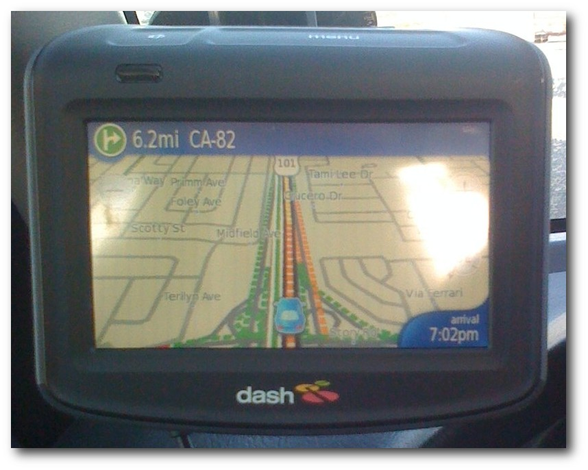Dash verwendet Openmoko-Hardware. © Ryan Grove (CC-BY-NC-SA)
Software
Softwaremäßig lief bei Openmoko anfangs alles sehr konfus ab. Ende 2006 wurde die erste Version des Openmoko-Betriebssystems veröffentlicht, als Toolkit wurde GTK gewählt. Wegen der schwierigen manuellen Bedienung folgte bereits Anfang 2007 eine überarbeitete Version. Parallel wurde Qtopia (Link), die Distribution der Firma Trolltech, die inzwischen von Nokia übernommen wurde, auf die Openmoko-Plattform portiert. Sie beherrscht zwar alle wichtigen Grundfunktionen und verfügt über eine schnelle Oberfläche, da die GUI komplett im Framebuffer läuft und kein „X Window System“ (Link) vorhanden ist, jedoch gibt es kaum Software für das System. Später folgte wiederum das April/"Äugust-Software-Update (ASU) (Link), welches Enlightment und Qtopia-Programme einsetzt. Es stellte eine Verbesserung dar, ließ aber noch Wünsche offen. Es verfügt zwar über eine große Auswahl von installierbaren Paketen, von denen aber nur wenige direkt nach der Installation des Updates bereits vorhanden sind.Die Zukunft? FSO!
Die Zukunft des Projektes liegt in der in Python geschriebenen freesmartphone.org-Middleware FSO (Link). FSO ermöglicht eine einfache Verwendung der Hardware über dbus. So ist es möglich, dass sich GPS automatisch ein- bzw. ausschaltet wenn eine Anwendung darauf zugreift. Außerdem können Technologien wie Assisted GPS (AGPS) und Ähnliches zentral integriert werden. Auch eine Ortung mittels Handynetz (GSM) ist inzwischen geplant. Vor Kurzem erschien Milestone V (Link). Zu den Neuerungen zählen stabileres GPRS, automatische Zeit- und Zeitzonenkonfiguration per GPS und die Integration von Beschleunigungungssensoren für Gestenerkennung. Außerdem wurde eine Schnittstelle (API) für Personal Information Manager (PIM) integriert, diese ist allerdings noch experimentell. Zum Einsatz kommt FSO in SHR, Debian, FYP und weiteren Distributionen.Anwendungen
Eine Vorstellung aller Anwendungen würde den Rahmen dieses Artikels sprengen, deshalb wird sich auf auf eine Liste mit wenigen Highlights beschränkt:- TangoGPS (Link) - Anzeigen von Straßenkarten und mehr.
- Mokomaze (Link) - Einen Ball per Beschleunigungssensoren durch ein Labyrinth navigieren.
- Numptyphysics (Link) - Das Ziel ist es, einen Ball zu einem Stern zu befördern, indem man Objekte zeichnet.
- Remoko (Link) - Remoko meldet sich als Bluetooth-Eingabegerät und erzeugt Tastenkombinationen.
- Black Sheep (Link) - Leute, die schwer einschlafen, können nun auch am Neo Schafe zählen.
Numptyphysics' Hauptmerkmal ist die Physik-Engine. © Qole Tech (CC-BY)
In den folgenden Ausgaben von freiesMagazin werden genauere Vorstellungen folgen. Wer nicht so lange warten will, kann auch opkg.org (Link) durchstöbern.
Andere Images
Android
Ein anderes interessantes Projekt ist die Portierung von Android (Link). Hierbei besteht das Problem darin, dass die Android-Plattform für neuere Generationen des ARM-Prozessors entwickelt wurde. Die aktuelle Version des Port (beta3) kann Anrufe tätigen/empfangen, sich mit einem WLAN-Netz verbinden und den GPS-Chip nutzen. Die freie Navigationssoftware AndNav2 (Link) ist bereits vorinstalliert. Allerdings ist die GSM-Verbindung teilweise instabil und es gibt Probleme mit GPRS und SMS. Über die Firma Koolu (Link) können bereits Geräte mit vorinstalliertem Android erworben werden.SHR
Beim Stable Hybrid Release (SHR) (Link) handelt sich es um ein von Bearstech (Link) unterstütztes Community-Projekt. SHR war als Weiterführung der GTK-basierenden Distribution gedacht. Inzwischen setzt SHR Enlightment und die FSO-Middleware ein. Somit ist es mit den FSO-Demo-Images vergleichbar, wobei in SHR eigene Telefonanwendungen einsetzt werden und nicht Zhone, wie bei den FSO-Images.Debian
Da für die ARM-Architektur bereits eine Debian-Quelle vorhanden ist, gab es frühzeitig einen Debian-Installer für das Openmoko.FYP
FYP ist eine recht neue, auf Debian basierende Distribution. Der Name stammt von dem Webforum FreeYourPhone (Link). FYP setzt als erste Distribution (abgesehen vom FSO-Demo-Image) bereits Milestone V ein. Im Moment sucht der Entwickler zusammen mit der Community eine voll kompatible Kernelkonfiguration.Hackable
Hackable basiert wie FYP auf Debian, allerdings wird hier die vom 2007.2er-Image (Link) bekannte GTK-Oberfläche verwendet. Wie auch SHR wird Hackable von Bearstech unterstützt. Ziel von Hackable ist, wie der Name schon vermuten lässt, ein System für Entwickler und Bastler zu schaffen.Gentoo
Da Gentoo (Link) (bzw. gcc) bekanntlich auch auf ARM-Prozessoren lauffähig ist, ist es nicht überraschend, dass es bereits einen portage-overlay gibt. Allerdings gibt es kaum Erfahrungsberichte dazu.Fazit
Hardwareseitig ist das NeoFreerunner ein recht guter PDA mit GPS. Softwareseitig ist die Lage unklarer. Es gibt zwar interessante Software für die Plattform, die verfügbaren Distributionen haben aber alle noch ihre kleinen und großen Schwächen, wobei das FSO-Framework bereits in Begriff ist, viele davon auszumerzen. Als OpenStreetMap-Mapper (Link) (siehe auch „OpenStreetMap - GoogleMaps-Klon oder doch mehr?“, freiesMagazin 11/2008 (Link)) ist das Gerät hervorragend zu gebrauchen. Das GTA03 wird sich wegen der integrierten 2MP Kamera vermutlich noch besser fürs Mappen eignen. Links- http://wiki.openmoko.org/wiki/Main_Page/de
- http://de.wikipedia.org/wiki/FIC
- http://www.openmoko.com
- http://wiki.openmoko.org/wiki/Neo_1973
- http://de.wikipedia.org/wiki/ARM-Architektur
- http://wiki.openmoko.org/wiki/Neo_FreeRunner
- http://wiki.openmoko.org/wiki/GTA03
- http://www.pro-linux.de/news/2009/14023.htm
- http://freeyourphone.de/portal_v1/viewtopic.php?f=19&t=929
- http://wiki.openmoko.org/wiki/GTA04
- http://wiki.openmoko.org/wiki/Supported_devices
- http://wiki.openmoko.org/wiki/HXD8
- http://qtopia.net/modules/devices/
- http://de.wikipedia.org/wiki/X_Window_System
- http://wiki.openmoko.org/wiki/ASU
- http://wiki.openmoko.org/wiki/FSO
- http://trac.freesmartphone.org/milestone/milestone5
- http://www.tangogps.org/gps/cat/About
- http://mokomaze.projects.openmoko.org/
- http://numptyphysics.garage.maemo.org/
- http://wiki.openmoko.org/wiki/ReMoko
- http://www.opkg.org/package_169.html
- http://www.opkg.org/
- http://www.android.com/about/
- http://www.andnav.org
- http://www.koolu.com/
- http://wiki.openmoko.org/wiki/Stable_Hybrid_Release
- http://www.bearstech.com
- http://www.freeyourphone.de
- http://wiki.openmoko.org/wiki/2007.2
- http://wiki.openmoko.org/wiki/Gentoo
- http://www.openstreetmap.org
- http://www.freiesmagazin.de/freiesMagazin-2008-11
| Autoreninformation |
| Florian Schweikert benutzt seit zwei Jahren Linux (Debian und Ubuntu). Durch das Openmoko-Projekt ist er auf OpenStreetMap aufmerksam geworden. Vor allem sein Neo Freerunner hilft beim Kartografieren der Umgebung. |
gNewSense - Das freie Ubuntu
von Benedikt Ahrens Das Projekt gNewSense (Link) hat sich zum Ziel gesetzt, eine GNU/Linux-Distribution zu schaffen, die die Freiheit der Benutzer als oberstes Ziel hat - auch wenn dadurch Komfort und Hardware-Unterstützung eingeschränkt werden. Als Basis wird dafür das Betriebssystem Ubuntu genutzt.Über Debian und Ubuntu
Ein freies Ubuntu? Ist Ubuntu (Link) denn nicht schon frei? Nein, Ubuntu ist nicht frei im Sinne der Free Software Foundation (FSF) (Link) (die Richtlinien, nach denen die Freiheit eines Betriebssystems von der FSF beurteilt wird, finden sich auf der Webseite (Link)), genauso wenig wie Debian, das Fundament, auf welchem Ubuntu aufbaut. Das Ziel dieser Distributionen ist es, so viel Hardware wie irgend möglich zu unterstützen und damit dem Benutzer die Installation und Verwendung der eigenen Distribution einfach und komfortabel zu gestalten - es geht schließlich um Marktanteile. Die Prinzipien freier Software bleiben dabei manchmal auf der Strecke. Eine etwas laxe Einstellung zum Thema Freiheit lässt sich dabei in allen Bereichen der Software-Herstellung diagnostizieren, angefangen beim Linux-Kernel bis hin zum Verteilen der Software durch Debian und Ubuntu. Hinweis: Es bleibt dem Leser überlassen, zu untersuchen, ob die hier getroffenen Aussagen über Debian und Ubuntu in ähnlicher Weise auch auf andere Distributionen, wie z. B. openSUSE, zutreffen. Die folgenden Zeilen beziehen sich ausschließlich auf Debian und Ubuntu.Der Linux-Kernel
Die meisten Rechnerkomponenten - CD-Laufwerke, Netzwerkkarten etc. - benötigen zur Kommunikation mit der Hauptplatine eine Software, die auf einem Speicher in der Komponente selbst gelagert wird. Diese Software wird oft Firmware genannt. Bei den meisten Komponenten ist die Firmware fest in der Komponente installiert. Bei anderen, insbesondere bei Netzwerkkarten, wird die Firmware vom Gerätetreiber (d. h. vom Kernel-Modul) beim Laden des Moduls auf die Komponente kopiert. Um hier den Komfort des Benutzers zu erhöhen, wird die Firmware zu einigen Komponenten in den Linux-Kernel integriert. So z. B. die Firmware zu Netzwerkkarten der Firma Broadcom, welche durch den Treiber tg3 betrieben werden. Das klingt vernünftig, denn ohne die Firmware funktioniert die entsprechende Komponente oft nicht. Doch leider entspricht die meiste Firmware nicht den Kriterien freier Software, da die Hersteller ihren Quelltext nicht offengelegt haben. Als Beispiel soll hier der Treiber tg3 dienen. Während der Treiber selbst frei und unter der GNU General Public License lizenziert ist, benutzt er eine unfreie Firmware (Link). Software, die von proprietärer Software ausgehend produziert wurde, ist nicht frei. Das tg3-Modul befindet sich - mitsamt Firmware - im Original-Kernel (Link).Die Distributionen
Wie gehen die Distributionen mit dem offiziellen Linux-Kernel um? Das Debian-Projekt fundiert auf einem strengen Vertrag (Link), welcher Richtlinien für die von Debian verteilte Software enthält (DFSG) (Link). Eine Abstimmung im Jahr 2006 (Link) zum Thema „unfreie Software im Linux-Kernel“ ergab eine Befürwortung der Verteilung dieser unfreien Software. Die Kernaussage: Die Verwendbarkeit der Software ist wichtiger als die Erfüllung des sozialen Vertrags und die Freiheit des Benutzers. Doch nicht nur mit dem Linux-Kernel verteilen die Distributionen unfreie Software. Das Ubuntu-Paket linux-firmware liegt in der Sektion main und damit in der Sektion, die laut Ubuntu nur freie Software enthält. Dennoch liefert das Paket unfreie Firmware (Link). Ein weiteres Beispiel: Jahrelang ignorierten Debian und Ubuntu die Tatsache, dass X.org unfreie Software enthielt (Fehlerbericht von Debian (Link), Entwicklerabstimmungen bei Debian über den Umgang mit unfreier Software (Link) (Link), Fehlerbericht von Ubuntu (importiert von Debian) (Link)). Bewusst wurde unfreie Software in der Sektion main belassen, um den Komfort und die Nutzbarkeit des Betriebssystems nicht einzuschränken. Dank einer neuen Lizenz für die betroffene Software ist dieses Problem mittlerweile aber behoben (Link). Weiterhin erleichtern Debian und Ubuntu die Installation unfreier Software, z. B. durch die Bereitstellung der Repositorys contrib und non-free (Debian) bzw. restricted und multiverse (Ubuntu) sowie durch eine graphische Oberfläche zur Installation proprietärer Treiber für Grafikkarten, WLAN-Karten etc. (in Ubuntu unter der Benutzeroberfläche GNOME im Menu „System » Administration“). Auch die Standardbrowser Iceweasel (Debian) und Firefox (Ubuntu) bieten die Installation unfreier Plugins an.gNewSense - die Idee
Das Projekt gNewSense hat sich zum Ziel gesetzt, eine GNU/Linux-Distribution zu schaffen, die die Freiheit der Benutzer als oberstes Ziel hat - auch wenn dadurch Komfort und Hardware-Unterstützung eingeschränkt werden. Handlungsgrundlage ist die Richtlinie der FSF für freie Betriebssysteme (Link). Folgendes Zitat beschreibt das Ziel von gNewSense: „Note our goal is to produce a fully free distribution, not to have as many features as possible“ (Link). (Auf Deutsch: „Beachte, dass es unser Ziel ist, eine komplett freie Distribution zu erstellen, nicht, so viele Funktionen wie möglich zu haben.“) Konkret bedeutet dies, dass gNewSense versucht, ...- nur freie Software im Sinne der FSF zu verteilen und
- die Installation unfreier Software nicht zu erleichtern.
Die Umsetzung
Zu diesem Zweck programmierten die Gründer Brian Brazil und Paul O'Malley den sogenannten „Builder“, eine Reihe von Skripten, die aus Ubuntu die unfreien Elemente entfernen. Mit Hilfe des Builders kann jeder Benutzer sich seine eigene freie GNU/Linux-Distribution bauen. Ein interessanter Spezialfall allerdings ist die bereits vorbereitete Distribution - welche, wie das Projekt auch, gNewSense genannt wird - für die eine Live-CD in Form eines ISO-Images bereitsteht (Link). Die aktuelle Version gNewSense 2.1 basiert auf Ubuntu 8.04.1 und bringt daher ein fast identisches Look and Feel, wie die Screenshots (Link) zeigen. Der Live-Modus erlaubt das Testen der Hardware - nicht unwichtig, denn durch das Entfernen unfreier Treiber können einige Hardware-Komponenten, die unter Ubuntu unterstützt werden, nicht betrieben werden (siehe unten). Aus dem Live-Modus heraus kann die Installation auf der Festplatte gestartet werden. Anleitungen und Hilfen zu Installation und Verwaltung des Systems sind ebenfalls im Wiki (Link) zu finden.Welche Einschränkungen gibt es?
Nach obigen Ausführungen ist es keine Überraschung, dass die Benutzung von gNewSense Einschränkungen mit sich bringt im Vergleich zu Ubuntu. Fehlende Unterstützung für viele WLAN-Karten, fehlendes GLX, kein Firefox, dies alles macht gNewSense nicht attraktiver für den Benutzer. Um Enttäuschungen zu vermeiden, ist es daher dringend empfohlen, sich vor einer Installation über die zu erwartende Hardware-Unterstützung und mitgelieferte Software zu informieren. Hierzu sollte gNewSense im Live-Modus von der CD gestartet werden. Hier kann man Grafik, Sound, Netzwerkkarte etc. ohne Risiko testen. Da die Entfernung unfreier Firmware aus dem Kernel automatisiert erfolgt, gibt es keine präzise Liste von Rechnerkomponenten, die von gNewSense - im Vergleich zu Ubuntu - nicht unterstützt werden. Ausgangspunkt für die Suche nach unterstützter Hardware kann eine entsprechende Seite der FSF (Link) sein. Für weitere Informationen empfiehlt sich der Besuch des gNewSense-Forums (Link) oder eine Anfrage auf der Mailingliste (Link). Im Allgemeinen nicht unterstützt werden WLAN-Karten, verschiedene LAN-Karten und Grafikkarten, für die keine freien Treiber existieren. Im Vergleich zu Ubuntu fehlen selbstverständlich auch die Software-Repositorys restricted und multiverse, die Sektion universe ist hingegen standardmäßig aktiviert (Link).Warum dennoch gNewSense?
gNewSense ist eines der Betriebssysteme, die von der FSF als frei eingestuft und aktiv unterstützt werden (Link). Für das Betriebssystem stellt das GNU-Projekt eine modifizierte Version des Firefox-Browsers, Icecat (Link) genannt, zur Verfügung, die sehr einfach über die Paketverwaltung installiert werden kann. Icecat bietet die Installation ausschließlich freier Plugins an und wurde im Vergleich zu Firefox um einige Sicherheitsfunktionen erweitert. Einige der von gNewSense nicht unterstützten Komponenten können durch die Installation eines neuen Kernels des Projekts „Linux Libre“ (Link) doch noch unterstützt werden (vorbereitete Debian-Pakete bietet Ali Gunduz an (Link)). So ermöglicht der aktuelle Kernel 2.6.28-libre dieses Projekts die Verwendung des tg3-Moduls ohne die unfreie Firmware. Auch einige WLAN-Karten der Firma Atheros können mit Hilfe der freien Module atk5 und atk8 (im Kernel 2.6.28 enthalten) betrieben werden. Durch die Benutzung von gNewSense kann man zeigen, dass einem die Freiheit der verwendeten Software wirklich wichtig ist. Hardware-Hersteller können so dazu gebracht werden, freie Treiber und Firmware für ihre Produkte bereitzustellen und somit Transparenz und Innovation auch in diesem Bereich der Software-Herstellung zu ermöglichen. Doch auch den Mutterprojekten Debian und Ubuntu von gNewSense kann man durch den Einsatz von gNewSense signalisieren, dass man die Prinzipien und Verträge konsequent einhalten will und mit faulen Ausnahmen nicht einverstanden ist. Links- http://www.gnewsense.org
- http://www.ubuntu.com
- http://www.fsf.org
- http://www.gnu.org/philosophy/free-system-distribution-guidelines.html
- http://www.broadcom.com/support/ethernet_nic/driver-sla.php?driver=570x-Linux
- http://www.kernel.org
- http://www.debian.org/social_contract
- http://www.debian.org/social_contract\#guidelines
- http://www.debian.org/vote/2006/vote_007.en.html
- https://bugs.launchpad.net/~gnewsense
- http://bugs.debian.org/cgi-bin/bugreport.cgi?bug=211765
- http://www.debian.org/vote/2004/vote_002
- http://www.debian.org/vote/2006/vote_007
- https://bugs.launchpad.net/debian/+bug/6765/comments/8
- http://www.fsf.org/news/thank-you-sgi
- http://www.gnu.org/philosophy/free-system-distribution-guidelines.html
- http://www.gnewsense.org/Main/Features
- http://wiki.gnewsense.org/Main/Broken3dApps
- http://www.gnewsense.org/Mirrors/Mirrors
- http://wiki.gnewsense.org/Screenshots/Screenshots
- http://wiki.gnewsense.org/
- http://www.fsf.org/resources/hw
- http://wiki.gnewsense.org/index.php?n=ForumMain.ForumMain
- http://www.gnewsense.org/index.php?n=Community.Community
- http://www.gnewsense.org/Main/Features
- http://www.gnu.org/links/links.html\#FreeGNULinuxDistributions
- http://www.gnu.org/software/gnuzilla/
- http://www.fsfla.org/svnwiki/selibre/linux-libre/index
- http://aligunduz.org/gNewSense/
| Autoreninformation |
| Benedikt Ahrens benutzt seit mehreren Jahren Debian und Ubuntu. Über die im Debian-Projekt andauernde Diskussion über den Umgang mit unfreier Firmware im Linux-Kernel („Binary Blobs“) entdeckte er gNewSense. |
Das Dateisystem ext4
von Hans-Joachim Baader Zweieinhalb Jahre nach seiner ersten Ankündigung ist das neue Dateisystem ext4 (Link) bereit für den breiten Einsatz. Hier nun ein erster Blick auf seine Features und die Leistung des neuen Dateisystems. Außer Konkurrenz erfolgt auch eine erste Geschwindigkeitsmessung von btrfs. Redaktioneller Hinweis: Der Artikel „Das Dateisystem ext4“ erschien erstmals bei Pro-Linux (Link) und wird mit freundlicher Genehmigung des Autors in freiesMagazin unter der GNU Free Documentation License (Link) veröffentlicht.Einleitung
Seit Mitte des Jahres 2006 ist jedem klar, dass das Dateisystem ext3 von Linux an Grenzen zu stoßen beginnt. Die maximale Kapazität von ext3 ist abhängig von der Blockgröße höchstens 8 Terabyte, was in LVM- oder RAID-Konfigurationen bereits seit einiger Zeit eine Einschränkung darstellen kann. Die derzeitige Auflösung von einer Sekunde bei Datei-Zeitstempeln wird schon seit längerer Zeit als unbefriedigend angesehen. Die Zeiten für das Prüfen bzw. Reparieren werden mit wachsender Größe eines Dateisystems immer weniger tolerierbar. Statt die zur Lösung dieser Probleme kursierenden Patches in ext3 einzubauen und damit dessen Stabilität und Kompatibilität zu gefährden, begannen die Entwickler auf Initiative von Theodore Ts'o (Link) mit dem neuen Dateisystem ext4. Dieses sollte die Fähigkeit haben, ein bestehendes ext3-Dateisystem einzubinden und in ein ext4-Dateisystem umzuwandeln. Abgesehen von diesem Kompatibilitätsfeature waren die Entwickler aber frei, beliebige Verbesserungen hinzuzufügen. Mit ext4 kommt auch eine neue Version des Journaling Block Device (jdb2). Auch hier soll die neue Version dafür sorgen, dass die Originalversion stabil gehalten werden kann. Knapp drei Monate nach der ersten Ankündigung wurden ext4 und jdb2 in den Entwicklerkernel aufgenommen und in Linux 2.6.19 erstmals der Allgemeinheit zur Verfügung gestellt, allerdings ausdrücklich als experimentell markiert.Eigenschaften von ext4
ext4 bringt in der initialen Version hauptsächlich Verbesserungen in Geschwindigkeit und Skalierbarkeit gegenüber ext3. Dazu gehören ein auf Extents beruhendes Format auf der Festplatte, 48-Bit-Blocknummern, Allokierung von mehreren Blöcken in einem Schritt, mehr als 32000 Unterverzeichnisse pro Verzeichnis, Reservierung von Verzeichnis-Inodes, Zeitstempel mit Nanosekunden-Auflösung, Inode-Versionen, Prüfsummen für das Journal und persistente Präallokation. Letztere ermöglicht es, Platz für eine Datei im Voraus zu reservieren. Dieser Platz bleibt reserviert und ist mit hoher Wahrscheinlichkeit zusammenhängend. Davon können Medienstreams und Datenbanken profitieren. Die Dateisystem-Größe von ext4 ist maximal 1 Exabyte. Einzelne Dateien sind bei Blöcken von 4 KB (mehr ist aktuell nicht möglich) immer noch auf 16 TB beschränkt, was mit der Speicherung von Blocknummern als 32-Bit-Zahl zu tun hat. Diese Begrenzung soll noch fallen. Sollte einmal ein Dateisystem-Check nötig werden, so müssen nur Blockgruppen geprüft werden, die auch allokiert sind. Das soll die Zeit für den Check stark reduzieren. Aufgrund der Kompatibilität kann man ext3-Dateisysteme in ext4 umwandeln, ohne ein Backup mit Rücksicherung vornehmen zu müssen.Anlegen und Betreiben von ext4
Ein ext4-Dateisystem wird analog zu einem ext3-Dateisystem auf einem nahezu beliebigen Blockgerät mit dem Kommando mkfs.ext4 [Devicename] oder mkfs -T ext4 [Devicename] angelegt. Ein bestehendes ext3-Dateisystem kann man mit dem Kommando tune2fs -O extents [Devicename] in ein ext4-Dateisystem konvertieren. Von diesem Zeitpunkt an werden neue Dateien im Extent-Format angelegt, bestehende bleiben jedoch unverändert. Das neue Dateisystem kann nicht mehr als ext3 eingebunden werden, eine Konvertierung zurück ist also ausgeschlossen. Ein ext3-Dateisystem kann jedoch als ext4 eingebunden werden. Es bleibt dennoch ein ext3-System, bis es explizit konvertiert wird. Nach dem Anlegen kann das Dateisystem mit mount [Devicename] [Einhängepunkt] eingebunden werden. Optional kann man den Typ des Dateisystems mit -t ext4 angeben. Das dürfte jedoch meist unnötig sein, da das Dateisystem automatisch erkannt wird. Nach dem Einbinden kann das Dateisystem wie jedes andere verwendet werden. Erweiterte Attribute und Security-Labels sollten wie bei ext3 zur Verfügung stehen. Ein kurzer Test zeigt, dass sich auf Systemen, die die Option „große Dateien verwenden“ nicht besitzen, Dateien von maximal 2 TB Größe erzeugen lassen. Der andere Fall konnte leider nicht getestet werden.Benchmarks
Durchführung
Testrechner war ein AMD Phenom (4 Kerne) mit 2,4 GHz und 4 GB RAM. Als Kernel kam Linux 2.6.28 in der 64-Bit-Version zum Einsatz. Für den Test wurde ein logisches Volume von 20 GB Größe auf einem RAID 1 angelegt. Auf besondere Optionen beim Erstellen und Einbinden der Dateisysteme wurde verzichtet. Zwar können diese durchaus Auswirkungen auf die Geschwindigkeit haben, aber bis zum Beweis des Gegenteils ist anzunehmen, dass die von den Entwicklern vorgegebenen Parameter optimal sind. Eine Option, die auf allen Dateisystemen sinnvoll ist, die sie anbieten, ist relatime oder gar noatime. Denn das Speichern der letzten Zugriffszeit einer Datei erzeugt viel I/O, und es gibt praktisch keine Anwendung, die diese Zeit benutzt. In diesem Test wurde diese Option allerdings nicht benutzt. Ein erster Testlauf mit einem eigens erstellten Skript erbrachte unbefriedigende Ergebnisse. In diesem Lauf wurde jede Messung dreimal gemacht und das Benchmarkprogramm bonnie++ (Link) mit seinen Standardparametern verwendet. Die Ergebnisse zeigten große Schwankungen und erwiesen sich als unzureichend. Zudem wurde das System nicht optimal ausgereizt. Leider war es nicht möglich, die Schwankungen zu begrenzen, da das System während der Benchmarks wechselnden anderen Lasten ausgesetzt war. Ein Herunterfahren in Runlevel 1, wie es oft bei Benchmarks praktiziert wird, kam nicht in Frage. Um die Messergebnisse abzusichern, wurde daher ein neuer Testlauf mit besseren Parametern für bonnie++ durchgeführt und jede Messung fünfmal wiederholt. Der ganze Test wurde später mit weiteren fünf Läufen wiederholt. Wo nicht anders angegeben, wurde jeweils das beste Resultat der insgesamt 10 Läufe gewertet. Cache-Effekte wurden durch eine Dateigröße vom Doppelten des Hauptspeichers ausgeschlossen. Die beiden rohen Protokolldateien des Benchmarks mit jeweils fünf Durchläufen stehen zum Download zur Verfügung (Link) (Link). Auch das Skript diskbenchmark kann man herunterladen (Link). Es ist offensichtlich noch verbesserungsfähig, so könnte man beispielsweise die Blockgrößen bei dd und bonnie++ konfigurierbar machen. Die nachfolgende Tabelle zeigt die Ergebnisse, wobei als redundant erachtete Werte, die bonnie++ lieferte, nicht betrachtet wurden. Der markierte Eintrag in jeder Zeile hebt den besten Wert hervor. In den Zeilen, in denen ext2 am besten abschnitt, ist zusätzlich noch der Bestwert unter den Journal-Dateisystemen markiert.| Benchmarkergebnisse | |||
| ext2 | ext3 | ext4 | |
| Dateisystem anlegen [s] | 6,58 | 9,03 | 8,36 |
| Dateisystem einbinden [s] | 0,56 | 0,89 | 0,58 |
| Datei 8 GB lesen [MB/s] | 61,6 | 62,3 | 66,4 |
| Datei 8 GB schreiben [MB/s] | 63,1 | 57,1 | 60,4 |
| Seq. lesen [MB/s] | 60,2 | 59,3 | 64,8 |
| Seq. schreiben [MB/s] | 60,0 | 55,6 | 58,3 |
| Seeks [1/s] | 123 | 110 | 129 |
| Datei erzeugen [1/s] | 844 | 69760 | 59872 |
| Datei löschen [1/s] | 1964 | 19777 | 19574 |
| Datei 8 GB löschen [sys s] | 0,235 | 0,534 | 0,457 |
| Datei 8 GB löschen [min Ges s] | 0,498 | 0,612 | 0,500 |
| Datei 8 GB löschen [max Ges s] | 9,588 | 7,596 | 7,029 |
| Benchmarkergebnisse (Fort.) | |||
| xfs | jfs | reiser3 | |
| Dateisystem anlegen [s] | 0,28 | 0,49 | 0,81 |
| Dateisystem einbinden [s] | 0,17 | 0,19 | 1,47 |
| Datei 8 GB lesen [MB/s] | 64,9 | 62,5 | 59,3 |
| Datei 8 GB schreiben [MB/s] | 61,1 | 56,3 | 54,5 |
| Seq. lesen [MB/s] | 62,1 | 62,7 | 61,5 |
| Seq. schreiben [MB/s] | 55,0 | 54,6 | 52,4 |
| Seeks [1/s] | 116 | 116 | 133 |
| Datei erzeugen [1/s] | 3031 | 12213 | 18995 |
| Datei löschen [1/s] | 527 | 405 | 5328 |
| Datei 8 GB löschen [sys s] | 0,284 | 0,0 | 1,267 |
| Datei 8 GB löschen [min Ges s] | 0,308 | 0,007 | 1,296 |
| Datei 8 GB löschen [max Ges s] | 6,382 | 0,059 | 7,914 |
Auswertung
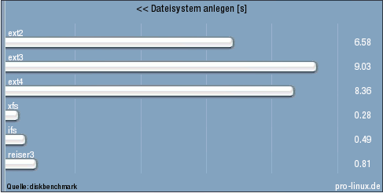Anlegen des Dateisystems.
Das Anlegen von Dateisystemen dauerte mit ext4 ähnlich lang wie mit ext3. Soweit bekannt, steigt diese Zeit bei ext2, ext3 und ext4 grundsätzlich mit der Dateisystem-Größe, sodass bei richtig großen Dateisystemen viel Zeit vergehen kann. Die Konkurrenten xfs, jfs und reiserfs skalieren hier besser. 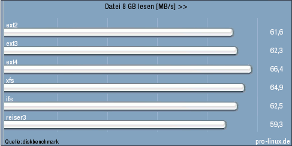
Blockweises Lesen von Daten.
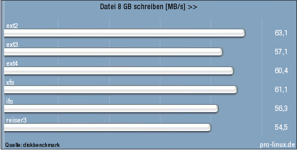
Blockweises Schreiben von Daten.
Das Lesen und Schreiben von Dateien, blockweise durchgeführt mit dd, ergab nur geringe Unterschiede, die weitgehend unter der Messgenauigkeit lagen. Dass ext2 als einziges Dateisystem ohne Journal beim Schreiben die anderen abhängte, war zu erwarten. ext3, jfs und reiserfs waren beim Schreiben etwas langsamer. ext4 zeigte eine sehr gute Leistung. 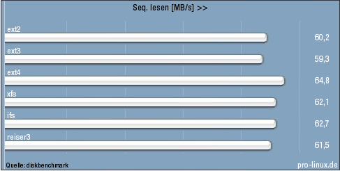
Sequentielles Lesen von Daten.
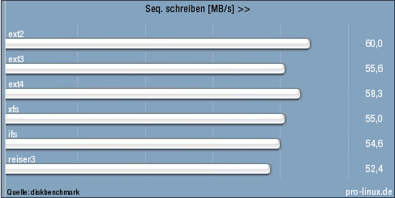
Sequentielles Schreiben von Daten.
Ähnliche Ergebnisse sollten sich beim sequentiellen Lesen und Schreiben mit bonnie++ ergeben, und in der Tat war es so. Auch hier war ext4 wieder in der Spitzengruppe. 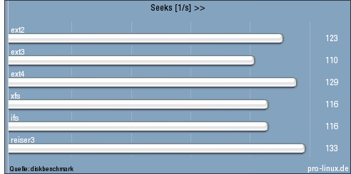
Suchzeiten.
Die Zahl der Seeks pro Sekunde hing stark von den Parametern von bonnie++ ab. Die hier ermittelten Werte wären jedoch im Einklang mit einer mittleren Suchzeit der Festplatte von 8 ms, in deren Nähe sich die meisten aktuellen Festplatten bewegen. Der Unterschied von 20 % zwischen den Dateisystemen scheint daher bemerkenswert. 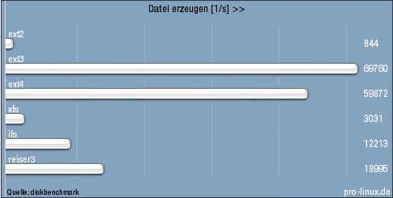
Erzeugen von Dateien.
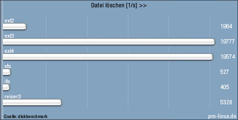
Löschen von Dateien.
Auch das Erzeugen und Löschen von Dateien hing stark von den Parametern ab. Im ersten Durchlauf wurden die Standardwerte verwendet, bei denen bonnie++ mit Dateigrößen von 0 arbeitet. Da leere Dateien in der Praxis unbedeutend sind, wurden die Dateien in späteren Läufen mit einer zufälligen, gleichverteilten Größe von 0 bis 1999 Bytes erzeugt. Ob durch diese Wahl bestimmte Dateisysteme begünstigt werden, konnte aus Zeitgründen nicht ermittelt werden. Das Ergebnis war, dass ext3 und ext4 deutlich in Führung lagen und die anderen Dateisysteme um ein Mehrfaches übertrafen. In der Praxis dürfte es jedoch nur wenige Anwendungen geben, in denen so viele Dateien erzeugt oder gelöscht werden, dass diese Werte eine Rolle spielen. Es wurde der Wert für das sequentielle Erzeugen von Dateien verwendet. Beim zufällig verteilten Erzeugen von Dateien waren alle Dateisysteme ein wenig langsamer. jfs allerdings war um Faktor 10 langsamer als beim sequentiellen Erzeugen. 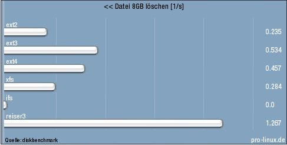
Löschen von Dateien mit 8 GB Größe.
Beim Löschen von Dateien von 8 GB Größe gab es erhebliche Schwankungen bei der benötigten Gesamtzeit. Angegeben ist daher in der Tabelle als Erstes die reine Systemzeit, die wesentlich weniger Varianz zeigte. Diese ist auch im Diagramm dargestellt. Bemerkenswert verhielt sich hier jfs, das überhaupt keine Zeit mit dem Löschen versäumte. ext4 schnitt im wahrsten Sinn des Wortes besser ab als ext3. reiserfs erwies sich als langsamer. Für die Anwender ist interessanter, wie schnell der Systemaufruf zum Löschen der Datei zurückkehrt. Die minimal gemessene Zeit war hier bei allen Dateisystemen nur geringfügig höher als die Systemzeit. ext2 und ext3 stellten eine Ausnahme dar, die vielleicht auf eine zu geringe Zahl von Messungen zurückzuführen ist. Ein sehr merkwürdigen Phänomen zeigte sich darin, dass das Löschen bisweilen erheblich länger dauerte, mitunter mehr als zwanzigmal so lang wie im minimalen Fall. Das deckte sich mit früheren Beobachtungen am Dateisystem ext3. Lediglich jfs konnte bei keinem solchen Ausreißer ertappt werden. Die Ursache des Problems könnte im Kernel unterhalb der Dateisystem-Ebene liegen, da alle Dateisysteme betroffen waren (ob jfs eine Ausnahme darstellt, kann noch nicht als sicher gelten). Entwickler von Echtzeit-Anwendungen sollten sich über dieses Verhalten im Klaren sein und einen Workaround vorsehen. Zusammenfassend kann man sagen, dass ext4 im Rahmen der Messgenauigkeit in fast jeder Hinsicht schneller als ext3 ist und zu den schnellsten Linux-Dateisystemen gehört. Da die Geschwindigkeit aber um weniger als 20 % über der von ext3 liegt, werden Benutzer im Falle einer Umstellung von ext3 auf ext4 von der höheren Geschwindigkeit nichts bemerken.
Dateisystemprüfung
ext4 soll auch die Zeit für die Dateisystemprüfung deutlich reduzieren. Um dies zu prüfen und zu quantifizieren, wurde folgendes Szenario eingerichtet: Das Dateisystem wurde wieder in einer Größe von 20 GB angelegt und eingebunden. Da es nicht sinnvoll ist, ein leeres Dateisystem zu prüfen, wurde das Dateisystem mit knapp 20 GB Dateimüll gefüllt. Das war die Gelegenheit, die Geschwindigkeit eines annähernd realistischen Kopiervorgangs zu messen. Danach wurde das Dateisystem ausgehängt. Nun wurde nochmals gemessen, wie lange das Dateisystem zum Einbinden benötigte. Auch das nachfolgende umount wurde gemessen. Das Dateisystem war damit bereit für den interessanten Teil, die Dateisystemprüfung mit dem Programm fsck (File System Check). Dieser wurde ohne spezielle Optionen durchgeführt. Schließlich wurde mit debugfs -v /dev/mapper/vg0-test das Dateisystem auf „dirty“ gesetzt. Ein nachfolgendes e2fsck begann auch ohne die Option -f eine Dateisystemprüfung. Deren Zeit wurde ebenfalls gemessen. Zum Abschluss wurde das Dateisystem beschädigt: # dd if=/dev/zero of=/dev/mapper/vg0-test count=100 seek=1024Diese zugegebenermaßen wenig subtile Methode führte zu dem beabsichtigten Ergebnis, dass bei einer anschließenden Prüfung mit e2fsck -f Fehler erkannt wurden. Die Prüfung mit Reparatur dauerte trotzdem nicht länger als der fehlerfreie Fall. Dass bei dieser Reparatur, die die Konsistenz des Dateisystems wieder herstellt, normalerweise Daten verloren gehen, sollte bekannt sein. Wichtige Daten müssen immer mit einem Backup gesichert werden.
| Weitere Ergebnisse mit ext3 und ext4 | ||
| ext3 | ext4 | |
| 20 GB kopieren [MB/s] | 24,1 | 26,3 |
| Volles Dateisystem einbinden [s] | 0,122 | 0,186 |
| Volles Dateisystem aushängen [s] | 0,006 | 0,110 |
| fsck -f [s] | 60,3 | 1,9 |
Weitere Themen
Defragmentierung
Jedes Dateisystem kann im Laufe der Zeit fragmentieren. Das bedeutet, dass Dateien nicht mehr kontinuierlich auf der Platte gespeichert werden und dadurch die Zeit zum Lesen der Datei ansteigen kann. Die meisten Linux-Dateisysteme besitzen Algorithmen, um Fragmentierung so gut wie möglich zu vermeiden, sodass kaum ein Anwender jemals eine Leistungseinbuße durch Fragmentierung verspürt. Dementsprechend sind Werkzeuge zur Defragmentierung dünn gesät. Für ext4 ist dennoch eine Online-Defragmentierung vorgesehen. Ein Programm namens e4defrag ist offenbar in Arbeit (Link). Für die wenigen Benutzer, die jemals eine Defragmentierung benötigen werden, bietet der Artikel „Defragment Ubuntu, Fedora, ext3, ext4“ (Link) eine kleine Übersicht über Methoden und Programme.Externes Journal
Wie bei ext3 kann man bei ext4 die Geschwindigkeit etwas steigern, wenn man das Journal auf ein separates Gerät legt: beispielsweise ein Dateisystem auf /dev/sdc1 mit einer Blockgröße von 4096, dessen Journal auf /dev/sdd1 liegt. Die vorhandenen Nutzdaten auf /dev/sdc1 bleiben hierbei erhalten. Zunächst ist sicherzustellen, dass das Dateisystem nicht eingebunden ist: # umount /dev/sdc1Nun kann man das bestehende Journal entfernen, danach das externe Jornal auf /dev/sdd1 mit der gleichen Blockgröße anlegen und zuletzt das Journal, das nun extern ist, wieder hinzufügen: # tune2fs -O ^has_journal /dev/sdc1
# mke2fs -b 4096 -O journal_dev /dev/sdd1 # tune2fs -J device=/dev/sdd1 /dev/sdc1
Booten von ext4
Über die Zusammenarbeit der Bootloader liegen mit Ausnahme von GRUB (Link) noch keine Informationen vor. Für die alte Version von GRUB 0.9x gibt es eine Implementierung von ext4, die im Rahmen eines „Summer of Code“-Projekts von openSUSE entwickelt wurde (Link). Es ist unklar, ob und wann diese Modifikation in das offizielle Projekt einzieht. Für die Nachfolgeversion GRUB 2 gibt es noch keine offizielle Unterstützung, aber es wird daran gearbeitet. Die Entwicklerversion 1.97 von GRUB soll von ext4 booten können (Link).btrfs, der neue Herausforderer
Kurz vor Fertigstellung des Artikels wurde btrfs (Link), das neue Dateisystem von Chris Mason, nicht nur in den offiziellen Kernel aufgenommen, sondern erschien auch in einer neuen Version 0.17, die sich zusammen mit den zugehörigen Tools problemlos kompilieren und installieren ließ. Dies war Anlass genug, die Stabilität des Testsystems zu riskieren und auch für btrfs einige Benchmarkergebnisse zu ermitteln. Da btrfs noch mindestens ein halbes Jahr von der Fertigstellung entfernt ist, sollte man die folgenden Resultate mit Vorsicht genießen. Auf die Eigenschaften von btrfs soll hier nicht weiter eingegangen werden. Eine solche Betrachtung könnte Gegenstand eines späteren Artikels sein. Hier soll es nur um die Grundfunktionen und deren Geschwindigkeit gehen. Die Testbedingungen waren die gleichen wie beim ursprünglichen Test. Erfreulicherweise lief der Test ohne erkennbare Probleme durch. Auch für diesen Test, der mit 10 Läufen durchgeführt wurde, stehen die Rohdaten zur Auswertung zur Verfügung (Link). Hier zunächst die gleiche Tabelle wie oben für btrfs:| Benchmarkergebnisse | |
| btrfs | |
| Dateisystem anlegen [s] | 0,40 |
| Dateisystem einbinden [s] | 0,11 |
| Datei 8 GB lesen [MB/s] | 65,2 |
| Datei 8 GB schreiben [MB/s] | 60,5 |
| Seq. lesen [MB/s] | 66,4 |
| Seq. schreiben [MB/s] | 59,7 |
| Seeks [1/s] | 173 |
| Datei erzeugen [1/s] | 32808 |
| Datei löschen [1/s] | 20843 |
| Datei 8 GB löschen [sys s] | 0,786 |
| Datei 8 GB löschen [min Ges s] | 0,950 |
| Datei 8 GB löschen [max Ges s] | 1,173 |
Fazit
Mit ext4 ist es den Entwicklern gelungen, das Dateisystem ext3 ins nächste Jahrzehnt zu befördern. Bei leicht gesteigerter Geschwindigkeit der normalen Dateioperationen bringt ext4 das Ende der meisten relevanten Größenbeschränkungen, beschleunigte Dateisystemprüfung, eine effizientere Verwaltung und andere Verbesserungen. Dabei werden keine grundlegend neuen Konzepte eingeführt, sondern auf Bewährtes aufgebaut, das bereits aus anderen Dateisystemen bekannt war. Unklar ist zur Zeit noch, wie sich ext4 mit den aufkommenden SSD-Festplatten verhält. Doch bleibt den Entwicklern noch viel Zeit für entsprechende Optimierungen. Auch ist ext4 noch nicht fertig, sondern wird im Gegensatz zu ext3 wohl noch einige weitere Features erhalten. Vorsicht ist geboten, wenn eine Interoperabilität mit anderen Betriebssystemen notwendig ist, beispielsweise über virtuelle Maschinen. Da es eine Weile dauern dürfte, bis ext4-Implementationen für die anderen Systeme bereitstehen, sollte man in diesem Fall von ext4 Abstand nehmen. Links- http://ext4.wiki.kernel.org/
- http://www.pro-linux.de/berichte/ext4/ext4.html
- http://www.gnu.org/copyleft/fdl.html
- http://www.pro-linux.de/news/2006/9900.html
- http://www.coker.com.au/bonnie++/
- http://www.pro-linux.de/berichte/ext4/ext4-ergebnis1.txt
- http://www.pro-linux.de/berichte/ext4/ext4-ergebnis2.txt
- http://www.pro-linux.de/berichte/ext4/diskbenchmark
- http://www.pro-linux.de/work/tuning/fs-tuning.html
- http://article.gmane.org/gmane.linux.file-systems/24133
- http://sharevm.wordpress.com/2008/12/16/435/
- http://www.gnu.org/software/grub/
- http://code.google.com/p/grub4ext4/
- http://grub.enbug.org/CurrentStatus
- http://btrfs.wiki.kernel.org/
- http://www.pro-linux.de/berichte/ext4/btrfs.txt
| Autoreninformation |
| Hans-Joachim Baader befasst sich seit 1993 mit Linux. 1994 schloss er sein Informatikstudium erfolgreich ab und machte die Softwareentwicklung zum Beruf. Seit 1995 arbeitet er freiberuflich. Daneben ist er einer der Betreiber von Pro-Linux.de. |
Ein Tuz für den Kernel
von Mathias Menzer Basis aller Distributionen ist der Linux-Kernel, der fortwährend weiterentwickelt wird. Welche Geräte in einem halben Jahr unterstützt werden und welche Funktionen neu hinzukommen, erfährt man, wenn man den aktuellen Entwickler-Kernel im Auge behält.Ein Tuz für den Kernel
Am 23. März, fast genau drei Monate nach dem Weihnachtskernel (siehe „Kernel-Rückblick“, freiesMagazin 01/2009 (Link)), wurde der Kernel 2.6.29 veröffentlicht (Link), der diesmal im Zeichen des Teufels steht. Das ist jedoch nicht spirituell, sondern sehr weltlich zu verstehen - Tux räumt für die neue Version seinen Platz als Maskottchen und überlässt diesen dem Tasmanischen Beutelteufel Tuz. Diese Aktion soll auf die Bedrohung dieser Tierart durch die Krankheit „Devil Facial Tumor Disease“ (Link) aufmerksam machen.Tuz, Linux-Maskottchen auf Zeit.
© Andrew McGown und Josh Bush (CC-BY-SA)
{kind=link}
Obwohl dies eine der augenscheinlichsten Änderungen darstellt, sind die anderen Neuerungen doch von größerer Bedeutung. So legt „Kernel Modesetting“ den Grundstein für einen flackerfreien Startvorgang und damit den Startbildschirm Plymouth (Link), der schon in Ubuntu 9.10 Einzug halten könnte. Mit btrfs (Link) ist nun ein neues, auf Leistung getrimmtes Dateisystem mit am Start, das sich allerdings noch in der Entwicklung befindet und daher nicht für den produktiven Einsatz geeignet ist. Fertig ist dagegen SquashFS (Link), ein komprimierendes Read-only-Dateisystem für den Einsatz z. B. auf Live-CDs. eCryptfs (Link) ist an sich nichts Neues, bislang wurden damit jedoch nur die Inhalte von Dateien verschlüsselt. Ab jetzt können auch die Dateinamen mit dem dateisystemweiten Schlüssel chiffriert werden. Konsistente Backups eines Dateisystems sind nur möglich, wenn während der Erstellung der Sicherung keine Schreibvorgänge darauf durchgeführt werden. Eine passende Funktion hierzu konnte Linux bislang nicht aufweisen, mit „Filesystem freeze“ können nun von eingehängten Dateisystemen vollständige und konsistente Sicherungen oder Replikate im laufenden Betrieb erstellt werden. ext4 (Link) kann nun mit einem „no journal mode“ aufwarten, bei dem eine kleine Leistungsteigerung durch den Verzicht auf ein Journal erkauft wird, auch unter der höheren Gefahr eines Datenverlustes im Fehlerfall. Wer gern mit großen Multiprozessorsystemen arbeitet, wird sich darüber freuen, dass der Kernel nun bis zu 4096 Prozessoren von Haus aus unterstützt. Damit derartige Systeme auch möglichst performant arbeiten, wurde das klassische RCU (Read-Copy-Update) überarbeitet und verwendet nun hierarchische Strukturen, die eine bessere Skalierbarkeit erlauben. Ursprünglich für Rechner mit 16 bis 32 CPUs entwickelt, ist es für moderne Multiprozessorsysteme nicht mehr geeignet, da die verwendeten Strukturen so groß werden, dass es sich bei der Leistung des Systems bemerkbar macht. RCU ist ein Mechanismus, der verhindert, dass zeitgleiche Lese- und Schreibvorgänge auf den Speicher stattfinden. Sie müssen so gesteuert werden, dass ein Lesevorgang entweder den ursprünglichen Speicherinhalt liest, oder den, der nach einem Schreibvorgang vorliegt. Das Auslesen von Daten, die gerade in den Speicher geschrieben werden und eventuell unvollständig sind, kann zu schweren Fehlern führen und soll durch RCU unterbunden werden. Neuzugang im Linux-Kernel ist WiMAX (Link), ein Standard für Breitband-Funk nach IEEE-802.16. Der Stack stammt von Intel und wurde auch gleich mit einem Treiber für deren WiMax/WiFi Link 5x50 Karten versehen. Der „Wireless Access Point Mode“ ist eine Anpassung des mac80211-Stacks und ermöglicht den Betrieb als Access Point in Verbindung mit hostapd (Link). Dies kann allerdings nur mittels cfg80211 (Link) eingerichtet werden, zudem muss die verwendete Hardware und deren Treiber dies unterstützen. Auch mit neuen Treibern kann der aktuelle Kernel aufwarten. Zu nennen sind zum Beispiel die WLAN-Treiber rt2860 und rt2870 für Ralink-Karten, für Realteks rtl8187se-Chip oder für Airgos AGNX00 Chips. Die kleinen OLED-Displays von Asus-Notebooks können nun über einen Treiber angesprochen werden. Mit dem openPOWERLINK-Stack (Link), einer Umsetzung von CANopen (Link) über Ethernet, steht nun ein Kommunikationsprotokoll zur Verfügung, das in der Automatisierungstechnik verwendet wird. Diese Übersicht stellt nur einen Auszug der umfangreichen Änderungen dar, mit denen 2.6.29 aufwartet. Eine vollständige Auflistung liefert die englischsprachige Seite KerneNewbies.org (Link).
Ärger um Ext4
Kaum nutzt die erste Distribution ext4 als Standard-Dateisystem, schon gibt es Ärger (Link): Das um bis zu 60 Sekunden verzögerte Schreiben von Daten auf die Festplatte, auch als „Allocate-on-flush“ (Link) bekannt, sollte eigentlich die Systemleistung steigern und beim Energiesparen helfen. Bei Abstürzen der Alpha-Versionen von Ubuntu 9.04 sorgte es jedoch für den reihenweisen Verlust von Daten, darunter bemerkenswert viele Konfigurationsdateien von KDE und GNOME, die nach dem Absturz schlicht leer waren und entsprechende Probleme verursacht haben. ext4-Entwickler Ted Ts'o weist den Fehler den beiden Desktopumgebungen zu, die offensichtlich sehr viele Dateien im gleichzeitigen Schreibzugriff hatten. Als Lösung empfiehlt er künftig das Schreiben in eine neue Datei und das anschließende Verschieben auf den Original-Dateinamen und weist auf die Funktion fsync() hin. Einige Patches, die das Problem entschärfen sollen, wurden bereits eingebracht, werden sich aber erst in 2.6.30 wiederfinden (Link) (Link) (Link). Generell entspricht dieses Prinzip jedoch dem POSIX-Standard (Link). Dieser gibt für den Fall, dass das System nicht sauber heruntergefahren wird, jedoch lediglich an, dass der Zustand danach „undefiniert“ ist. So besteht in nächster Zeit noch Klärungsbedarf, inwieweit Optimierungen an der Basis des Systems althergebrachte Vorgehensweisen umwerfen dürfen oder auf die Entwicklung und Anforderungen der übrigen Systemkomponenten und Anwendungen Rücksicht nehmen müssen. Zwischenzeitlich wurde das Thema nach einer Mail von Jesper Krogh zu Performance-Einbußen bei ext3 (Link) wieder aufgerollt und auch Linus Torvalds meldete sich zu Wort. Wiederum musste Ts'o den „Allocate-on-flush“-Mechanismus und deren Vorteile verteidigen. Sein Vorschlag, ext4 vorerst nur auf einzelnen Systemen zu betreiben, wurden von Torvalds mit der Aussage, dass man dann auch direkt zu ext2 zurückkehren könne, abgetan. Generell ist Torvalds von dem Prinzip, Daten verzögert auf den Datenträger zu schreiben, wenig angetan, da dies die Gefahr erhöhe, dass Dateien beschädigt werden.Xen und der Kernel
Stirbt Xen (Link) aus? Eine Mail an die Linux-Kernel-Mailingliste (Link), mit der eigentlich um die Aufnahme von Patches für die Xen-Dom0-Unterstützung geworben wurde, löste eine Diskussion aus, ob überhaupt noch Xen-Patches im Linux-Kernel gepflegt werden sollen (Link). Die Virtualisierungslösung der Wahl ist mittlerweile KVM (Link), zumindest für die Kernel-Entwickler. KVM integriere sich besser in den Kernel, da er keinen eigenen Hypervisor brauche, sondern die Komponenten des Kernels selbst nutze. Dagegen steht, dass KVM nur mit Prozessoren, die AMD-V oder Intels VT-Technologie aufweisen, genutzt werden kann. Derzeit unterstützt der Kernel nur DomU, womit der Betrieb als Gast ermöglicht wird. Nativer Einsatz als Host erfordert Dom0-Unterstützung, die vom Xen-Hypervisor zwingend benötigt wird. Die Patches für Dom0 werden auch bei der aktuellen Xen-Version 3.3 nur für den Kernel 2.6.18 geliefert, der jedoch schon etwas älter ist und aktuelle Treiber missen lässt. Die fortschreitende Entwicklung des Kernels könnte, sollten keine Dom0-Patches für aktuellere Kernel-Versionen zur Verfügung stehen, zum Verlust von Marktanteilen bei Xen führen, spätestens wenn der Kernel 2.6.18 nicht mehr auf aktueller Hardware lauffähig ist.Nachfolger für netfilter
Der im Kernel integrierte Paketfilter netfilter (Link) bekommt einen Nachfolger. Dieser wird nftables (Link) heißen und wirft einige der alten Konzepte über den Haufen. Die Kernel-Komponente soll ohne Sperren auskommen und erheblich weniger Quellcode benötigen. Die Erzeugung von Regeln erfolgt durch die Userspace-Komponente, die über eine an iptables angelehnte Syntax gesteuert wird. Dahinter verbirgt sich jedoch ein Parser, der eine Prüfung der Regeln vornimmt, bevor er sie an das Kernelmodul weiterreicht und dieses damit von derlei Aufgaben entlastet. Weiterhin spricht für nftables, dass es komplett protokollunabhängig ist, flexibler und auch schneller als netfilter sein soll. netfilter dient seit acht Jahren als Basis für Firewall-Funktionalitäten in Linux-Systemen. Es regelt die Weitergabe von Paketen zwischen Netzwerkschnittstellen und den Eingangs- und Ausgangswarteschlangen. iptables ist die Bedienkomponente, mit der netfilter gesteuert wird. Links- http://www.freiesmagazin.de/freiesMagazin-2009-01
- http://lkml.org/lkml/2009/3/23/449
- http://de.wikipedia.org/wiki/Beutelteufel\#Die_Bedrohung_durch_DFTD
- https://blueprints.launchpad.net/ubuntu/+spec/plymouth
- http://de.wikipedia.org/wiki/Btrfs
- http://de.wikipedia.org/wiki/Squashfs
- https://launchpad.net/ecryptfs
- http://de.wikipedia.org/wiki/Ext4
- http://de.wikipedia.org/wiki/WiMAX
- http://hostap.epitest.fi/hostapd/
- http://linuxwireless.org/en/developers/Documentation/cfg80211
- http://openpowerlink.sourceforge.net/
- http://de.wikipedia.org/wiki/CANopen
- http://kernelnewbies.org/Linux_2_6_29
- https://bugs.launchpad.net/ubuntu/+source/linux/+bug/317781
- http://en.wikipedia.org/wiki/Allocate-on-flush
- http://git.kernel.org/?p=linux/kernel/git/tytso/ext4.git;a=commit;h=3bf3342f394d72ed2ec7e77b5b39e1b50fad8284
- http://git.kernel.org/?p=linux/kernel/git/tytso/ext4.git;a=commit;h=6645f8c3bc3cdaa7de4aaa3d34d40c2e8e5f09ae
- http://git.kernel.org/?p=linux/kernel/git/tytso/ext4.git;a=commit;h=dbc85aa9f11d8c13c15527d43a3def8d7beffdc8
- http://de.wikipedia.org/wiki/Portable_Operating_System_Interface
- http://www.linux-magazin.de/news/linus_torvalds_schimpft_ueber_ext_3_und_ext_4
- http://de.wikipedia.org/wiki/Xen
- http://lkml.org/lkml/2009/2/27/411
- http://www.heise.de/open/artikel/134016
- http://de.wikipedia.org/wiki/Kernel-based_Virtual_Machine
- http://de.wikipedia.org/wiki/Netfilter
- http://www.pro-linux.de/news/2009/13956.html
| Autoreninformation |
| Mathias Menzer wirft gerne einen Blick auf die Kernel-Entwicklung, um mehr über die Funktion von Linux zu erfahren und seine Mitmenschen mit seltsamen Begriffen und unverständlichen Abkürzungen nerven zu können. |
Programmieren in KBasic - Eine kurze Einführung
von Bernd Noetscher Die Sprache KBasic (Link) ist eine leistungsfähige Programmiersprache, die einfach und intuitiv zu erlernen ist. Es ist eine neue Programmiersprache ähnlich zu VB.NET und Visual Basic 6 (Link). KBasic ist 100 % syntaxkompatibel zu VB6 und QBasic. Außerdem unterstützt KBasic VB.NET direkt durch Funktionen, ähnliche Objekte und Klassen. Dabei ist es aber kein VB-Klon! Es handelt sich um eine voll funktionsfähige objektorientierte Sprache (Link), die die modernen Programmiertechniken mit eigenen Objekten und Ereignissen unterstützt. Der Artikel soll eine kleine Einführung in die Sprache geben. Redaktioneller Hinweis: Der Artikel „Programmieren in KBasic“ erschien erstmals bei Pro-Linux (Link) und wird mit freundlicher Genehmigung des Autors in freiesMagazin unter der GNU Free Documentation License (Link) veröffentlicht.Einleitung
KBasic ist eine Multi-Plattform-Programmiersprache für Mac, Windows und Linux, sodass fast die gesamte API auf allen Plattformen und Betriebssystemen gleich ist. Mit KBasic kann man moderne objektorientierte Anwendungen erstellen, z. B. mit Zugriff auf SQL-Datenbanken und das Internet. KBasic ist in englischer und deutscher Sprache verfügbar. KBasic nutzt Qt als Toolkit für die plattformübergreifenden Funktionen.Programmieren mit KBasic
Ein Programm in KBasic besteht aus einer oder mehreren Klassen, Modulen, Formularen oder einfach nur Funktionen oder Prozeduren. Genauso wie in VB6 ist es möglich, im globalen Namensraum globale Funktionen, Variablen und Konstanten zu deklarieren. Des Weiteren sind die einfachen Datentypen weitestgehend gleich. Bevor man mit dem Programmieren loslegen kann, ist es sinnvoll, dass man ein grundlegendes Verständnis über Computerprogramme hat. Ein Computerprogramm ist eine Liste von Anweisungen, die dem Computer sagt, was er tun soll. Der Computer folgt diesen Anweisungen oder Befehlen, Schritt für Schritt, bis er das Ende des Programms erreicht hat. Jede Zeile eines Computerprogramms ist für gewöhnlich ein Befehl, den der Computer ausführt. Jeder Befehl erledigt nur eine kleine Aufgabe, wie z. B. Zahlen addieren oder einen Text auf dem Bildschirm ausgeben. Computer verstehen kein Deutsch oder Englisch; sie verstehen auch keine andere menschliche Sprache. Computer verstehen nur eine Sprache: Maschinensprache. Diese besteht nur aus zwei Zahlen: 0 und 1. Aber Programmiersprachen wie KBasic erlauben Programmierern, Programme mit einer englisch-ähnlichen Sprache zu entwickeln. Dort gibt es einen Übersetzer, der diese englisch-ähnliche Sprache in Maschinensprache übersetzt, sodass der Computer die Programme verstehen kann. Ein Computerprogramm besteht aus Entwicklungsschritten, wie beim Schreiben eines Berichts oder einer Geschichte. Die folgenden Zeilen sollen diese Schritte verdeutlichen:- Entwurf des Programmkonzepts und der Bildschirmmasken, wie sie auf dem Bildschirm aussehen könnten.
- Erstellung des Programms mittels des Quelltexteditor und Formulardesigners.
- Abspeichern des Programms.
- Ausführen des Programms, um es zu testen.
- Fehler korrigieren.
- Zurück zu Schritt 2.
Beispielformular mit Radio-Buttons.
Ist Programmieren schwierig?
Ja und nein. Es ist einfach, kleine Programme in KBasic zu schreiben. Die KBasic-Programmiersprache ist logisch, der englischen Sprache ähnlich und einfach zu verstehen. Mit ein wenig Übung kann man einfache und nützliche Programme schreiben. Alles, was man braucht, ist Zeit.Die Entwicklungsumgebung
Die Entwicklungsumgebung von KBasic enthält u. a. Menüleisten, Werkzeugleisten, ein Projektübersichtsfenster, einen Quelltexteditor und einen Formulardesigner. Man kann KBasic für die schnelle Entwicklung von grafischen Anwendungen verwenden (Rapid Application Development - RAD). Der Formulardesigner ermöglicht per Drag & Drop und Mausklick- den Entwurf der Benutzeroberfläche eines Programms,
- die Bestimmung des Verhaltens der Steuerelemente und
- die Festlegung der Beziehung zwischen der Benutzerschnittstelle und dem Rest des Programms.
| Programmelemente | |
| Projekt | Es enthält u. a. Klassen, Module und Formulare. |
| Formular | Dies sind die Oberflächen des Programms mit dem zugehörigen Ereigniscode. |
| Klassen/Module | Dies sind die Programmteile. Klassen können Methoden und andere Anweisungen enthalten. |
| Prozeduren | Diese werden benutzt, um Programme zu strukturieren. |
Reaktionen auf Ereignisse
Eine typische KBasic-Anwendung besteht aus Formularen, Modulen, Klassen und anderen Objekten, die man zu einer Einheit verbindet. Formulare und deren Steuerelemente, das Ändern von Daten in einem Feld oder das Anklicken eines Befehlssymbols durch den Benutzer entsprechen Ereignissen. Man kann die Reaktion auf ein Ereignis steuern, indem man diesem Ereignis KBasic-Anweisungen zuordnet. KBasic ist objektorientiert. Objektorientierte Programmierung ist eines der wichtigsten Konzepte der letzten Jahre und hat sich auf breiter Linie durchgesetzt. Dort tauchen Begriffe auf wie- das Überschreiben von Klassenprozeduren und das dynamische Suchen nach Prozeduren,
- die Erweiterung einer Klasse, um eine Unterklasse zu erzeugen,
- Variablen einer Klasse oder Objekts oder
- Prozedur einer Klasse oder Objekts.
Installation
Die Installation der KBasic-Entwicklungsumgebung ist in einem eigenen Artikel „Installation von KBasic“ beschrieben.Einfaches Programmbeispiel: Hallo Welt
Jetzt soll sich einem allgegenwärtigen Favoriten zugewendet werden, einem sehr einfachen Programm: „Hallo Welt“. Dieses Beispiel gibt den Text „Hallo Welt!“ auf dem Bildschirm aus. Dazu gibt man folgende Programmzeile in ein neues Quelltextfenster in KBasic ein. Dafür klickt man im Menü auf „Datei » Neu » Neue Datei“ und speichert diese unter einem neuen Namen: Print "Hallo Welt!"Aller Anfang ist leicht
Im Folgenden werden wesentliche Bestandteile der Programmiersprache KBasic vorgestellt. Häufig ist es erforderlich, beim Ausführen von Berechnungen mit KBasic Werte vorübergehend zwischenzuspeichern. Man möchte z. B. verschiedene Werte berechnen, diese vergleichen und je nach Ergebnis des Vergleichs unterschiedliche Operationen mit den Werten ausführen. Hier eine Beispieldeklaration einer Variablen: Dim myName As StringZuweisungsanweisungen weisen einen Wert oder Ausdruck einer Variablen zu. Sie enthalten immer ein Gleichheitszeichen (=). Das folgende Beispiel weist den Rückgabewert der InputBox-Funktion der Variablen yourName zu: Dim yourName As String yourName = InputBox("What is your name?") MsgBox "Your name is " & yourName
Wenn man den obigen Quelltext eingibt und das Programm startet, wird man aufgefordert seinen Namen einzugeben. Nach der Eingabe wird dieser Name wie eingegeben auf dem Bildschirm angezeigt.
Hell oder Dunkel?
Datentypen beschreiben die Art der gespeicherten Daten. Neben dem Namen muss eine Variable auch einen Typ haben. KBasic unterstützt viele VB6-Datentypen und darüber hinaus noch viele mehr. Mögliche Typen sind:- einer der einfachen Datentypen (z. B. Double für Zahlen oder String für Texte)
- Name einer Klasse (ob benutzerdefinierte Klasse oder KBasic-Klasse)
- benutzerdefinierter Datentyp (Type ... End Type)
- benutzerdefinierte Aufzählung (Enum ... End Enum)
Mathematik steckt auch drin
KBasic unterstützt alle VB6-Operatoren und darüber hinaus noch einige mehr. Zum Addieren benutzt man Plus (+), zum Subtrahieren Minus (-). Division und Multiplikation werden mit Geteilt (/) und Mal (*) durchgeführt. Das folgende Beispiel gibt „Hallo Welt“ aus, was zuvor aus „Hallo “ und „Welt“ während des Programmablaufs erstellt wurde: Dim s As String s = "Hallo " + "Welt" PRINT sWhere do you want to go?
In einem Programm werden die einzelnen Anweisungen in Abhängigkeit von Bedingungen und Zuständen ausgeführt. Um Zustände und Bedingungen abzufragen gibt es spezielle Befehle. Die Befehle, die Entscheidungen und Schleifen in KBasic steuern, werden als Kontrollstrukturen bezeichnet. Die am häufigsten verwendeten Kontrollstrukturen in KBasic sind Entscheidungsstrukturen und Schleifenstrukturen.Ja oder Nein
Entscheidungsstrukturen enthalten bedingte Anweisungen, die überprüfen, ob eine Bedingung True oder False ist, und legen dann eine oder mehrere Anweisungen fest, die in Abhängigkeit vom Ergebnis der Überprüfung ausgeführt werden sollen. Wenn die Bedingung den Wert True hat, werden die Anweisungen nach Then ausgeführt, die Anweisungen nach Else werden übersprungen. Wenn aber die Bedingung den Wert False hat, werden hingegen nur die Anweisungen nach Else ausgeführt: Dim witzig As Boolean = True If witzig Then Print "Lachen :-)" Else Print "...langweilig!" End IfWie oft denn noch?
Einige Schleifen wiederholen Anweisungen, bis eine Bedingung dem Wert False entspricht, andere, bis eine Bedingung dem Wert True entspricht. Es gibt weiterhin Schleifen, die Anweisungen für jedes Objekt in einer Auflistung oder mit einer festgelegten Anzahl an Wiederholungen ausführen. For ... Next wird verwendet, wenn genau bekannt ist wie oft Anweisungen wiederholt werden sollen: Dim i As Integer For i = 0 To 11 Print "wiederhole"+ i Next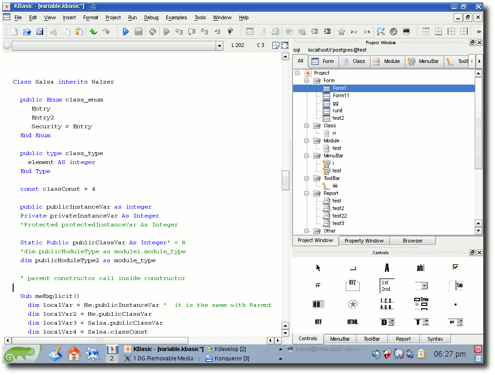
Eine Klassendefinition in KBasic.
Gruppendynamik
Wenn Programme größer werden, wird es auch schwieriger, sie zu überschauen und zu verwalten. Eine Möglichkeit, dem entgegenzuwirken, ist, die Quelltexte zu unterteilen, d. h. verschiedene Quelltexte in verschiedenen Prozeduren zu speichern und zu trennen. Eine Prozedur enthält bestimmte Anweisungen, die logisch zusammengehören. Das folgende Beispiel enthält eine Prozedur, die einen Wert zurück gibt, der aus einer Division ermittelt wurde: Function divide(dividend As Double,divisor As Double) As Double Return dividend / divisor End Function Print divide(18, 9)Schöne neue Welt: Objekte und Klassen
Eine weitere Möglichkeit, den Quelltext zu strukturieren, besteht darin, dass man Objekte und Klassen verwendet, um komplexe Sachverhalte darzustellen. Die Objekte und Klassen in KBasic sind ein komplexes Thema, welches hier kurz vorgestellt wird. Objekte werden anhand einer Klasse erstellt. Eine Klasse enthält die Anweisungen und Datendefinitionen, die ein Objekt beinhalten soll. Durch Objekte und Klassen ist es erst möglich einfach und schnell komplexe und wiederverwendbare Softwaremodule zu schreiben. Um ein Objekt zu erstellen und zu benutzen, braucht man eine Variable. Eine Variable, die ein Objekt beinhalten soll, zu deklarieren, erzeugt noch nicht das Objekt selbst. Die Variable ist entweder nur eine Referenz auf irgendein Objekt oder nichts. Um tatsächlich ein Objekt zu erzeugen, muss man das Schlüsselwort New benutzen. Eine Klasse enthält kein Hauptprogramm, sondern nur Deklarationen und Prozeduren. Man führt nicht eine Klasse, sondern die darin enthaltenen Prozeduren als Reaktion auf Ereignisse aus oder man ruft diese Prozeduren direkt auf. Eine Klasse zu definieren ist einfach. Normalerweise erbt jede Klasse von der Klasse Object, mittels Inherits kann stattdessen von einer beliebigen Klasse geerbt werden. Die Deklaration einer Klasse besteht aus dem Klassennamen und dem Namen der Elternklasse, von der die Klasse erbt. Die neue Klasse enthält Konstruktoren und Destruktor-Prozeduren, Klassenvariablen und Klassenprozeduren, Instanzvariablen und Instanzprozeduren, Klasseneigenschaften und natürlich Klassenkonstanten der Elternklasse. Um eine Klasse zu verwenden, benötigt man ein Objekt der Klasse. Class auto Public s As String Sub fahre() Print "fahre ..." End Sub Sub haltan() Print "halte an ..." End Sub End Class Dim audi As New auto ' erstelle neues Objekt anhand auto Dim bmw As New auto ' erstelle neues Objekt anhand auto audi.fahre audi.haltan bmw.fahreGoto QBasic
KBasic ist nicht nur eine Programmiersprache, sondern gleich drei. Wenn man alte BASIC-Befehle verwenden möchte, die man von VB6 oder Qbasic her kennt, wie z. B. GoSub oder Zeilennummern, so kann man dies auch in KBasic tun. Das folgende Beispiel stellt ein altes QBasic-Programm dar: OPTION VERYOLDBASIC DIM b AS INTEGER b = 45 GOTO bernd b = 99999 bernd: PRINT bLinks
- http://www.kbasic.de/
- http://de.wikipedia.org/wiki/Visual_Basic
- http://de.wikipedia.org/wiki/Objektorientierte_Programmierung
- http://www.pro-linux.de/work/kbasic/kbasic-tutorial.html
- http://www.gnu.org/copyleft/fdl.html
- http://www.kbasic.com/doku.php?id=source_codes
| Autoreninformation |
| Bernd Noetscher ist der Entwickler von KBasic. Sein Ziel ist es, Neulingen den Einstieg in die Programmierwelt möglichst einfach zu machen. Dafür arbeitet er seit 2000 an der Programmiersprache. |
Installation von KBasic
von Dominik Wagenführ Da in dem Bericht „Programmieren in KBasic - eine kurze Einführung“ keine Installationsanleitung vorkommt, soll diese in einem eigenen Artikel nachgereicht werden. Zusätzlich wird auch genauer auf die Lizenz von KBasic eingegangen.Die Lizenz
KBasics Quellcode für die Integrierte Entwicklungsumgebung (IDE), den Compiler und die Virtuelle Maschine (VM) wird laut Lizenzseite (Link) unter der GNU General Public License v3 (Link) veröffentlicht. Da KBasic-Programme in der Open-Source-Version immer auch die KBasic-VM benötigen, um ausgeführt werden zu können, dürfen laut Autor Bernd Noetscher mit der GPL-Version von KBasic selbst wiederum nur Programme erstellt werden, die der GPL unterliegen. Diese Aussage deckt sich mit der FAQ der Free Software Foundation (Link), wenn der GPL-lizenzierte Interpreter oder die GPL-lizenzierte VM Teile von sich oder anderen GPL-lizenzierten Programmen in das Endprogramm einbindet. Wer Closed-Source- beziehungsweise nicht-GPL-kompatible Programme mit KBasic entwickeln will, benötigt daher eine kommerzielle Lizenz von KBasic. Mit der Open-Source-Version von KBasic erstellte Programme darf man natürlich auch verkaufen, muss sie aber unter der GPLv3 lizenzieren (Link).Installation von KBasic
Hinweis: Die Installation wurde unter Ubuntu 8.10 32-Bit (in VirtualBox) und in Ubuntu 8.10 64-Bit getestet.Installation der vorkompilierten Version
Auf der Downloadseite von KBasic (Link) findet man eine vorkompilierte Version von KBasic für ein 32-Bit-Linux. Eine 64-Bit-Version gibt es dato noch nicht, diese soll aber mit Version 1.90 in einigen Wochen folgen. KBasic setzt die Installation folgender Pakete voraus:- libqt3-mt
- libqt4-webkit
- libphonon4
- libqt4-svg
- libqt4-sql
- libsqlite3-0
Nun kann man (auch als 64-Bit-Nutzer) die 32-Bit-Installationsdatei herunterladen, muss diese vor dem Start aber noch ausführbar machen: $ wget http://www.kbasic.com/installer_kbasic_professional_linux.bin $ chmod +x installer_kbasic_professional_linux.bin $ ./installer_kbasic_professional_linux.bin
Den letzten Befehl muss man mit Root-Rechten ausführen, wenn man die Software global (z. B. in /opt) installieren möchte. Bei der Installation wird ein Starter zur IDE auf dem Desktop angelegt. Hier findet man ebenfalls einen Uninstaller, den man auch manuell über die Datei $ ./uninstaller
im KBasic-Installationsverzeichnis anstoßen kann. Hinweis: Der Installer hat ein Problem, wenn sich der kompilierte Quellcode von KBasic in einem benachbarten Verzeichnis befindet. Da man das Deinstallationsverzeichnis nicht ändern kann, muss man vorher die manuell kompilierte Version in einen anderen Ordner oder auf eine andere Platte verschieben. (Oder man entzieht dem Quellcode-Verzeichnis kurzzeitig die Ausführrechte.)
Installation aus dem Quellcode
Da KBasic unter der GPLv3 veröffentlich wird, ist der Quellcode des Programmes auf der Webseite verfügbar (Link). Ein damit erstelltes Programm muss wieder unter der GPLv3 veröffentlicht werden. Wer Closed-Source-Projekte mit KBasic umsetzen will, benötigt eine kostenpflichtige Lizenz (siehe Abschnitt „Die Lizenz“ oben). Vor dem Kompilieren benötigt man einige Pakete (mitsamt aller Abhängigkeiten), die für die Generierung wichtig sind:- build-essential(bzw. ein C++-Compiler)
- automake
- libtool
- libqt4-dev
- libphonon-dev
Um das komplette KBasic (Compiler, IDE und VM) kompilieren zu können, benötigt man noch ein - leider nicht mitgeliefertes - Skript. Dieses soll erst in Version 1.89 integriert werden. Das Skript findet man zwar auf der KBasic-Webseite, die dortige Version hat aber leider ein paar Probleme. Daher wird eine leicht abgewandelte Variante benutzt, welche auch von unserem Server (Link) heruntergeladen werden kann: #!/bin/bash cd kbrun sed -i -e 's,^#define KBC,//#define KBC,g' ../kbshared/define.h sed -i -e 's,^#define IDE,//#define IDE,g' ../kbshared/define.h sed -i -e 's,^//#define RUN,#define RUN,g' ../kbshared/define.h rm moc* qmake kbrun.pro make cd .. cd kbc sed -i -e 's,^//#define KBC,#define KBC,g' ../kbshared/define.h
sed -i -e 's,^#define IDE,//#define IDE,g' ../kbshared/define.h sed -i -e 's,^#define RUN,//#define RUN,g' ../kbshared/define.h rm kbc cp -a ../kbshared kbc aclocal automake -a autoconf ./configure --prefix=/usr -sysconfdir=/etc CXXFLAGS=O2 -g0 -w" cp -f /usr/bin/libtool . make cd .. cd kbide sed -i -e 's,^#define KBC,//#define KBC,g' ../kbshared/define.h sed -i -e 's,^//#define IDE,#define IDE,g' ../kbshared/define.h sed -i -e 's,^#define RUN,//#define RUN,g' ../kbshared/define.h rm moc* qmake kbide.pro make cd ..
Den Inhalt fügt man in einen Texteditor ein und speichert das Ganze als Datei kbasic-build.sh im Ordner kbasic ab. 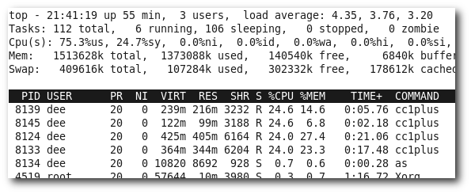
Hohe Speicherlast beim Kompilieren mit vier Prozessen.
Geändert wurde am Skript hauptsächlich die Option -j4 hinter den make-Aufrufen. Über diese Option werden vier parallele gcc-Kompilierungen gestartet (siehe „Mehrkern-Prozessoren mit make ausnutzen“, freiesMagazin 03/2008 (Link)). Das ist vor allem bei Mehrkernsystemen sinnvoll, hat aber leider den Nachteil, dass jeder gcc-Prozess etwa 400 MB Speicher verbraucht. Startet man also diese vier Prozesse, werden bis zu 1,6 GB gleichzeitig benötigt - neben dem Speicher, den das Betriebssystem braucht. Da heutige Standard-Rechner noch nicht alle über eine so große Menge an Speicher verfügen, ist die Option sehr gutgläubig vom Skript-Autor eingebaut worden und wurde daher wieder entfernt. Dann dauert die Kompilierung gegebenenfalls länger, aber zumindest friert das System beim Kompilieren nicht plötzlich ein, weil sämtlicher Speicher belegt ist. Wer genügend Speicher und mehr Kerne im System hat, kann das -j4 wieder einfügen. Daneben wurde noch der Pfad für libtool geändert, da ein %_bindir unter Linux-Systemen keinen Erfolg verspricht. Das Skript hat noch ein weiteres großes Problem: Wenn bei irgendeinem Schritt ein Fehler auftritt, hält die Generierung nicht an, sondern macht einfach weiter. Dadurch werden Fehler bei der Generierung gegebenenfalls übersehen oder es werden massig Fehlermeldungen ausgegeben, die nur Folgefehler sind. Wenn man den zuletzt genannten Punkt ignoriert, muss man das Skript noch ausführbar machen und kann die Generierung starten: $ chmod +x build.sh $ ./build.sh
Hinweis: Auf einem 64-Bit-System klappt die Generierung auf diese Art leider immer noch nicht, da zahlreiche Fehler der Art stack.h:104: Fehler: Typumwandlung von »memory_variable2*« nach »t_integer« verliert Genauigkeit
gemeldet werden. Dies soll sich, wie oben bereits erwähnt, mit Version 1.90 von KBasic ändern. Die KBasic-IDE kann über $ ./kbide/kbide
gestartet werden. Man erhält dann aber gegebenenfalls einige Warnhinweise mit der Meldung „Could not read from ...“. Diese kann man getrost ignorieren, da die Datei kbasic.config bei der Quelltext-Version nicht mitgeliefert, und daher auch nicht gefunden wird. 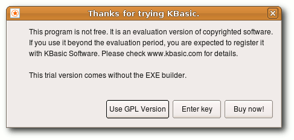
KBasic ist doch nicht frei?
Der IDE-Start
Nach dem Start der IDE wird man in der Version 1.87 von zwei Fenstern begrüßt. Das erste informiert über die GPL-Lizenz der Linux-Version. Dies ist zwar sinnvoll, ein einmaliges Einblenden würde aber reichen. Das zweite Fenster ist danach etwas verwirrend, da plötzlich behauptet wird, KBasic sei keine Freie Software, obwohl ein Schritt zuvor über die GPL informiert wurde. Da es dennoch einen Knopf „Use GPL Version“ gibt, ist dies höchstwahrscheinlich nur ein kleines Überbleibsel der Windows-Version. 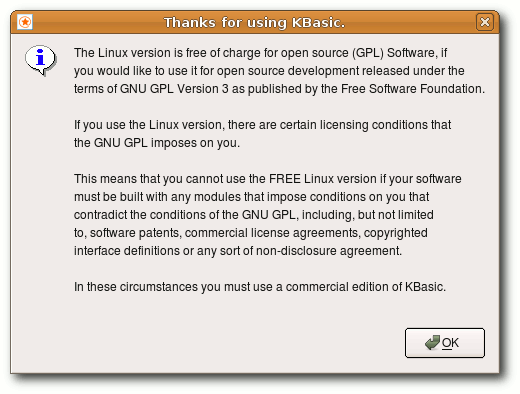Der Lizenzhinweis nach dem Start.
Da KBasic aber Open Source ist, kann man den Quellcode natürlich nach Belieben anpassen und diese zwei Fenster entfernen (kbide/_mainwindow.cpp enthält hierbei den relevanten Part). Für Version 1.89 hat Bernd Noetscher bereits eine Anpassung versprochen. Links
- http://www.kbasic.com/doku.php?id=kbasic_s_license
- http://www.gnu.org/licenses/gpl.html
- http://www.gnu.org/licenses/gpl-faq.html\#IfInterpreterIsGPL
- http://www.gnu.org/licenses/gpl-faq.html\#GPLCommercially
- http://kbasic.de/download.html
- http://wiki.ubuntuusers.de/getlibs
- http://www.kbasic.com/doku.php?id=source_codes
- http://www.freiesmagazin.de/system/files/kbasic-build.sh
- http://www.freiesmagazin.de/freiesMagazin-2008-03
| Autoreninformation |
| Dominik Wagenführ ist Softwareentwickler und programmiert auch in seiner Freizeit. KBasic steht zwar nicht auf seiner Lernliste, aber er findet, dass der andere KBasic-Artikel ohne Installation oder Lizenzerklärung nur halb so viel wert ist. |
Datensammlung mit Tellico
von Dominik Wagenführ Der Mensch ist ein Jäger und Sammler. Waren es vor einigen Jahren noch Briefmarken und Kronkorken, sind es heute eher DVDs und Computerspiele. Damit man die Übersicht nicht verliert, gibt es verschiedene Helfer, solche Sammlungen zu kategorisieren (Link). Tellico (Link) ist ein solches Helferlein. Das KDE-Programm hat dabei auch zahlreiche Sammlungen vordefiniert.Einleitung
Tellico ist ein KDE-Programm für die Verwaltung von Sammlungen und wird von Robby Stephenson entwickelt. Es gibt verschiedene vordefinierte Sammlungen wie z. B. für Computerspiele, Filme, Bücher, Musik, Briefmarken und vieles mehr. Für diesen Artikel soll eine eigene Sammlung angelegt werden. Und was läge näher, als die Artikel aus freiesMagazin zu kategorisieren? Wer Tellico im GNOME-Desktop einsetzt, sei vorgewarnt, dass der erste Start des Programms immer etwas länger dauert. Dies liegt daran, dass Tellico KDE-Bibliotheken benötigt, die erst in den Speicher geladen werden müssen. Zusätzlich sind gegebenenfalls einige Menüpunkte im Programm nicht übersetzt, wenn man die optionalen KDE-Sprachpakete nicht selbst installiert.Installation
Über die Paketverwaltung
Tellico ist eigentlich in allen Distributionen als vorkompiliertes Paket enthalten und kann über das Paket tellico installiert werden. Dabei werden, wie oben erwähnt, auch KDE-Bibliotheken mit installiert.Programm selbst kompilieren
Wer möchte, kann sich die allerneueste Version als Quellcode von der Webseite herunterladen (Link). Zur Zeit ist Version 1.3.5 aktuell. Um Tellico zu kompilieren, benötigt man folgende Entwicklerpakete (samt aller Abhängigkeiten):- build-essential (enthält C++-Compiler und diverse Werkzeuge)
- libqt3-mt-dev
- kdelibs4-dev
- libexempi-dev
- libpoppler-qt-dev
- libtag1-dev
- libyaz3-dev
mit apt-get installieren. Nach der Installation obiger Pakete und dem Download des Tellico-Quellcodes entpackt man das Tar-Archiv und führt in dem entpackten Ordner den bekannten Dreisatz zum Kompilieren aus: $ ./configure $ make # make install
Anstelle des make install kann auch checkinstall genutzt werden, wenn das zugehörige Paket vorher installiert wurde. checkinstall sorgt dafür, dass alle Dateien in ein Paket gepackt werden und später wieder leicht über die Paketverwaltung entfernt werden können. Achtung: Bei der Installation müssen die folgenden alten Tellico-Pakete vorher manuell deinstalliert werden: tellico, tellico-data und tellico-scripts.
Erstellung der Sammlung
Konzepterarbeitung
Bevor man eine neue Sammlung anlegt, sollte man sich klar darüber werden, welche Informationen man speichern will und welchen Datentyp die Information haben soll.Die Sammlungen lassen sich natürlich auch immer leicht erweitern, aber so spart man sich eine spätere Ergänzung einzelner Datenfelder. Für die freiesMagazin-Artikel sind folgende Informationen interessant:
- Titel (Text) - Diese Information enthält den Titel des Artikels.
- Autor (Text) - Wer hat den Artikel geschrieben?
- Monat (Auswahl) - In welchem Monat erschien der Artikel?
- Jahr (Auswahl) - Und in welchem Jahr?
- Seite (Nummer) - Die Seite, auf der der Artikel beginnt.
Sammlung erstellen
Zuerst öffnet man Tellico über den Menüpunkt „Büro » Tellico“. Über „Datei » Neu » Neue benutzerdefinierte Sammlung“ erstellt man eine neue Sammlung. Da das Ergebnis sehr leer aussieht, sollte man obige ausgearbeiteten Datenfelder hinzufügen. Dazu wählt man „Sammlung » Datenfelder der Sammlung“ oder klickt auf das zugehörige Symbol mit dem Zettel und dem Stift darauf.Die Symbole zur Erstellung neuer Einträge (links), zur Bearbeitung der Datenfelder (mittig links), zur Berichtserstellung (mittig rechts) und für die Filterung (ganz rechts).
Es gibt immer einen vordefinierten Eintrag „Titel“, der sich zwar nicht entfernen, dafür aber umbenennen lässt. In diesem Fall passen die Feld-Eigenschaften „Titel“, „Typ“ und „Kategorie“ aber bereits. Unter „Beschreibung“ ergänzt man eine sinnvolle kurze Beschreibung des Datenfeldes, z. B. „Titel des Artikels“. Einen „Standardwert“ gibt es nicht. Bei den Formatierungsoptionen kann man „Als Titel formatieren“ stehen lassen. Dies sorgt dafür, dass in der Anzeige später, bis auf bestimmte und unbestimmte Artikel und einige weitere Wörter, alles groß geschrieben wird. Bei den Feld-Optionen sollte nichts aktiviert werden. Als Nächstes wird über die Schaltleiste „Neu“ auf der linken Seite ein neuer Eintrag erstellt. Als „Titel“ trägt man „Autor“ ein und ergänzt eine gute Beschreibung. Die Formatierung sollte man auf „Als Namen formatieren“ umstellen. Dies sorgt dafür, dass eine Eingabe wie „Max Mustermann“ immer als „Mustermann, Max“ angezeigt wird. Die „automatische Vervollständigung“ ist sinnvoll, da es sicher Autoren gibt, die mehrere Artikel verfasst haben. Auch „Mehrere Einträge erlauben“ sollte man aktivieren, da Artikel von zwei oder mehr Autoren verfasst sein können. Mehrfacheinträge kann man später bei der Eingabe per Semikolon trennen. Eine „Gruppierung“ sollte man auch erlauben, um sich alle Artikel eines Autors auflisten lassen zu können. Danach fügt man den Monat mit Typ „Auswahl“ hinzu. Die Auswahlmöglichkeiten schreibt man jeweils durch ein Semikolon separiert in das Feld „Erlaubte Werte“, also „01; 02; 03; 04; 05; 06; 07; 08; 09; 10; 11; 12“. Alle anderen Felder lässt man leer. Identisch geht man mit dem Jahr (mit den Auswahlmöglichkeiten „2009; 2008“) und der Seite vor. Da man sicher auch daran interessiert ist, welche Artikel in einer bestimmten Ausgabe erschienen sind, muss man hierfür ein besonderes Feld anlegen. Man erstellt einen neuen Eintrag mit dem Titel „Ausgabe“. Als Typ stellt man „Abhängig“ ein. Die Beschreibung ist „freiesMagazin %{Monat}/%{Jahr}“. Eine Gruppierung muss logischerweise erlaubt sein. Die Syntax „%{FELDBEZEICHNUNG}“ holt sich damit den Inhalt dieses Feldes und zeigt ihn ausgewertet an. Es gibt daneben noch weitere Datentypen wie Checkboxen, Bewertungen (mit Sternen), Bilder, Tabellen, URLs und mehr.
Daten eingeben
Man sollte bei der Reihenfolge der erstellten Datenfelder beachten, dass diese immer abwechselnd von rechts nach links und von oben nach unten in zwei Spalten im Eingabefenster aufgeteilt werden. Die Reihenfolge kann man bei der Bearbeitung der Datenfelder jederzeit ändern. Um einen Neueintrag zu tätigen, wählt man „Sammlung » Neuer Eintrag“ oder klickt das Icon mit dem leeren Eintragsfeld (links neben dem Icon mit dem Stift) an. In dem erscheinenden Dialog füllt man alle Felder aus und wählt „Speichere Eintrag“. Über „Neuer Eintrag“ kann man weitere Einträge tätigen. 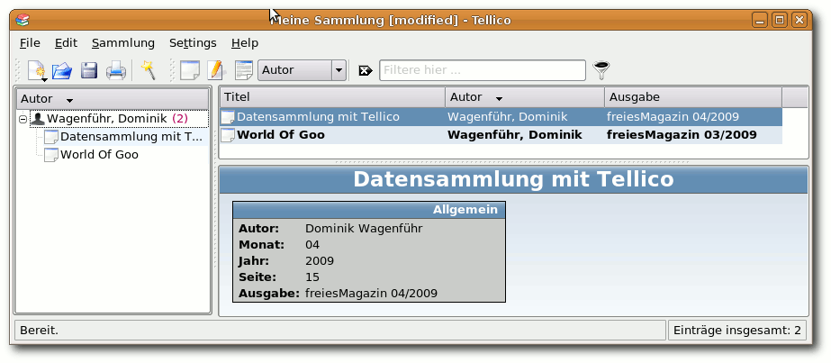Alle Einträge in der Übersicht.
Ansicht und Gruppierung
Ansichtseinstellungen
Auf der rechten oberen Seite im Tellico-Fenster sieht man alle aktuellen Einträge. Am Anfang ist nur die Spalte „Titel“ sichtbar. Für die anderen Datenfelder klickt man mit der rechten Taste auf die Leiste „Titel“ und kreuzt die gewünschten Einträge an. Durch einen Klick auf eine Spalte sortiert man die Sammlung nach dem gewünschten Feld. Klickt man einen Eintrag an, erscheint rechts unten eine Übersicht mit allen Inhalten der Datenfelder.Gruppierung
Auf der linken Seite sieht man die Sortierung nach Gruppen. Um eine Gruppe auszuwählen (alle Datenfelder mit der Eigenschaft „Erlaube Gruppierung“ zählen dazu), klickt man in der Leiste oben auf das Feld mit dem kleinen Dreieck. Wählt man z. B. „Autor“ aus, sieht man in der linken Fensterhälfte eine Liste aller Autoren mit der Anzahl der Artikel in Klammern hinter dem Namen. Ein Klick auf das „Plus“ vor dem Eintrag listet alle Artikel auf. Klickt man nur auf den Autor, und derjenige hat mehr als einen Artikel verfasst, wird in der rechten unteren Fensterhälfte jeder Artikel mit einem Icon dargestellt. Durch eine Mehrfachauswahl (per Strg oder Shift) kann man so auch mehrere Datensätze auf einmal bearbeiten.Filter
Neben der Sortierung und Gruppierung kann man Einträge auch herausfiltern. Man muss dafür nur in das Feld rechts neben dem weißen X einen Suchbegriff eingeben, und schon werden die Einträge gefiltert. Durch einen Klick auf den Trichter kann man die Ergebnisse aber noch viel genauer filtern.Fazit
Tellico hat noch mehr zu bieten. So kann man komplette Berichte aus den eigenen Sammlungen erstellen, als HTML speichern oder gleich ausdrucken. Daneben gibt es noch einen Ausleihdialog, über den man verwalten kann, wem man z. B. eine DVD ausgeliehen hat. Auch ein Datenabgleich mit verschiedenen Anbietern wie Amazon oder Internet Movie Database sind ohne Weiteres möglich. Dies hilft vor allem bei der Eingabe von Büchern, Filmen oder anderen Medien, die eine eindeutige Kennung haben. In den Einstellungen findet man eine ganze Reihe an weiteren Optionen. Insgesamt ist Tellico ein sehr sinnvoller Helfer bei der Verwaltung von Daten. Es ersetzt zwar keine komplexe Datenbank, für die ein Privatanwender aber meistens sowieso keine Verwendung hat. Nicht-KDE-Nutzer könnte stören, dass das Programm auf Qt basiert, die Integration in GNOME ist aber gut genug. Wer darüber hinwegsieht, erhält ein praktisches Programm zur Sammlungsverwaltung. Links- http://wiki.ubuntuusers.de/Medienverwaltung
- http://periapsis.org/tellico/
- http://periapsis.org/tellico/download/
| Autoreninformation |
| Dominik Wagenführ ist Redakteur bei freiesMagazin und verwaltet alle seit 2006 verfassten Artikel des Magazins in einer Tellico-Datenbank. Auf diese Art findet er leicht Autoren und Artikel vergangener Ausgaben. |
Kurztest: Etherpad
von Mathias Menzer So vielseitig Emacs, vi, Nano und Co auch sein mögen - wollen mehrere Personen gleichzeitig an einem Text arbeiten, sehen die alten Haudegen schnell alt aus. Während Google Text & Tabellen (auch Google Docs genannt) eine grundlegende Zusammenarbeit über das Internet ermöglicht, ist eine gleichzeitige Bearbeitung ausgeschlossen, da die Aktualisierungsintervalle zu lang sind. Etherpad (Link) dagegen erlaubt eine gemeinsame Sitzung und Bearbeitung nahezu in Echtzeit. Ein neues Pad kann ohne vorherige Anmeldung erstellt werden. Dies geschieht zum einen durch einen Klick auf „Create new pad“ auf der Startseite, wodurch Etherpad einen zufälligen Verzeichnispfad (z. B.: http://etherpad.com/HDYuPGyh37) erzeugt. Zum anderen kann man die Pfadbezeichnung hinter dem Host- und Domain-Teil der URL selbst vorgeben (z. B.: http://etherpad.com/freiesMagazin). Existiert diese URL noch nicht, so bietet Etherpad an, sie zu erstellen. Eine Benutzeranmeldung existiert nicht. Jeder, der die exakte URL kennt, kann auf sie zugreifen und den Inhalt des Pads verändern. Um den größten Schaden zu verhindern, lassen sich Revisionen erstellen, auf deren Stand man das Pad zurücksetzen kann. Änderungen, die in der Zwischenzeit vorgenommen wurden, sind dann natürlich dahin. Die Revisionen lassen sich betrachten, jedoch nicht löschen. Dies gilt auch für das Pad, einen Delete-Knopf sucht man vergebens. Solche Möglichkeiten sind erst für die kostenpflichtige Version vorgesehen, die jedoch noch nicht angeboten wird. Hier sollen dann auch weitere Sicherheitsfunktionen hinzukommen. Welche genau, wird jedoch nicht angegeben. Etherpad verträgt bis zu sieben Anwender an einem Pad. Diese können entweder über eine Einladungs-E-Mail hinzugerufen werden, oder indem man ihnen kurz und bündig die URL in den Chat kopiert oder diese auf anderem Wege bekannt gibt. Apropos Chat: Eine Chatfunktion existiert ebenfalls, sodass für die gemeinsame Sitzung auch nicht mehr auf zusätzliche Anwendungen zurückgegriffen werden muss. Die verschiedenen Personen werden mit unterschiedlichen Farben versehen, somit sind die geschriebenen Texte jeweils zuordenbar. Auch die Chat-Nachrichten folgen der Farbgebung. Weitere Hilfsmittel lassen sich in den Optionen einschalten, zum Beispiel eine Nummerierung der Zeilen oder der Zeilenumbruch. Syntax-Highlighting gibt es bislang nur für JavaScript. Formatierungen sind Etherpad als reinem Texteditor fremd, Überschriften und Formatierungen müssen somit irgendwie anders markiert werden. Eine Rechtschreibprüfung ist ebenfalls nicht vorhanden. Diese Aufgabe kann jedoch der Webbrowser übernehmen, wenn er zur Kontrolle der Orthografie in Text-Eingabefeldern angewiesen wurde. 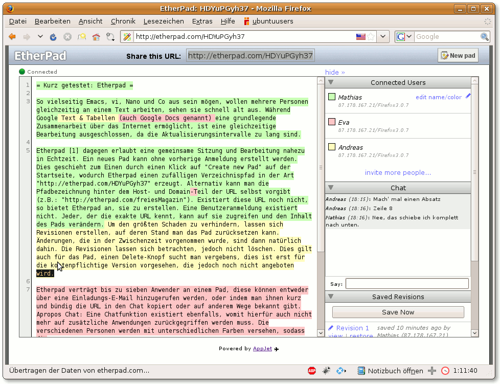Dieser Artikel entstand in Etherpad, wenn auch der Autor nur seine Arbeit auf mehrere Rechner verteilte.
Fazit
Etherpad erfüllt seinen Job, und das gut. Das gemeinschaftliche Arbeiten an einem Text läuft angenehm flüssig. Die Verzögerung, bis die anderen die eigenen Eingaben zu sehen bekommen, liegt weit unter einer Sekunde. Das Interface ist übersichtlich gehalten und intuitiv bedienbar - auch aufgrund der eher eingeschränkten Optionen. Ein Vorteil gegenüber eingesessenen Anwendungen wie z. B. Gobby (Link) liegt darin, dass eben keine eigene Anwendung außer einem Webbrowser benötigt wird und damit die Hürden für den Einstieg sehr niedrig liegen. Auch die Installation eines Server entfällt, zudem nutzt Etherpad keine eigenen Protokolle und Ports, womit auch Anwender hinter einer Firewall oder einem Web-Proxy nicht von vorneherein ausgeschlossen werden. Einen faden Beigeschmack hinterlässt die Speicherung der Inhalte und der Revisionen auf unbestimmte Zeit. Darüber, firmeninterne oder sonstige sensitive Texte mit Etherpad zu bearbeiten, sollte man nicht einmal nachdenken. Links| Autoreninformation |
| Mathias Menzer bearbeitet oft und gerne Texte mit Freunden und Kollegen. Werkzeuge, die dies ermöglichen, sind ihm da immer willkommen. |
Linux-Herstellerunterstützung: DVD-Brenner-Update
von Dominik Wagenführ Auch wenn ein Update des DVD-Laufwerks eher selten vorgenommen wird, kann es mitunter hilfreich sein. Durch eine neue Firmware werden mehr Medien unterstützt und gegebenenfalls neue Funktionen freigeschaltet. Schön wäre es da natürlich, wenn man das Ganze bequem unter Linux durchführen könnte. Die Frage ist, inwieweit man bei diesem Vorhaben von den Herstellern unterstützt wird. Ein kleiner Service-Check soll es zeigen. Das Thema „DVD-Brenner-Update unter Linux“ kam in einem Thread im ubuntuusers-Forum auf (Link). Es erstaunte mich, dass es anscheinend echt keinen DVD-Hersteller zu geben scheint, der Linux direkt unterstützt bzw. schlimmer noch, dass alle wirklich ein installiertes Windows voraussetzen.Der Test
Für den Test wurden die bekanntesten DVD-Hersteller ausgesucht, um den Vergleich etwas einzuschränken. Dabei wurde sich auf die Webseite begeben und versucht mit einer Technikfachkraft oder einen Marketing-Berater Kontakt aufzunehmen. Aufgrund rechtlicher Gründe werden die Antworten der Hersteller - falls es diese gab - nicht zitiert, sondern nur sinngemäß wiedergegeben. Es sei darauf hingewiesen, dass eine Antwort auch vom persönlichen Wissen des Angestellten abhängt, der die Anfrage beantwortet hat. Zusätzlich wurde sich bei der Anfrage nur auf ein bestimmtes aktuelles DVD-Modell beschränkt. Folgende Frage wurde, soweit möglich, an alle Hersteller gestellt: Guten Tag, ich würde gerne einen DVD-Brenner von Ihnen kaufen, verstehe es aber so, dass man ein Firmware-Update nur per Windows einspielen kann. Da ich das Betriebssystem nicht habe, sondern Linux nutze, wie kann ich sonst Ihren Brenner updaten? Vielen Dank im Voraus für eine Antwort Dominik WagenführDie Anfrage wurde in den meisten Fällen am 9. Januar (einem Freitagabend) getätigt, sodass mit einer Antwort frühestens am darauffolgenden Montag gerechnet werden konnte.
Die Ergebnisse
Asus
Der Kontakt über die Asus-Seite (Link) ist nicht gerade leicht. Man findet die Kontaktseite für den technischen Service (Link) zwar schnell, stellt man als Produkttyp aber „optische Archivierung“ ein und als Produktmodell den gewünschten DVD-Brenner, kann man das Formular nicht einfach abschicken. Obwohl es nur um eine simple technische Anfrage geht, muss man sehr detaillierte Informationen zu Mainboard, Grafikkarte, Prozessor, Arbeitsspeicher und anderem angeben. Interessant ist auch, dass man eine Produktseriennummer oder ein Kaufdatum für das noch gar nicht erstandene Gerät angeben soll. Asus rechnet wohl nicht damit, dass sich jemand vorab informieren möchte. Für einen normalen Benutzer, der den PC nicht selbst zusammengebaut hat, ist die Beantwortung der geforderten Angaben ein Ding der Unmöglichkeit. Aus diesem Grund wurde die Formularanfrage verworfen und direkt eine E-Mail an das Marketing-Team von Asus (Link) geschickt. Eine Antwort auf die Anfrage steht aber bis heute noch aus.LiteOn
Über die Lite-On-Webseite (Link) gelangt man sehr schnell zur technischen Kontaktadresse, die für optische Laufwerke (ODD) zuständig ist. Da die Seite komplett in Deutsch gehalten ist, wurde die E-Mail auch in Deutsch verschickt. Am Dienstag, den 13. Januar, kam die Bitte um eine englische Anfrage, der ich auch nachgekommen bin, auch wenn sicher einige Anwender an dieser Stelle aufgeschmissen wären. Die Antwort auf die zweite, englische E-Mail landete am Montag, den 19. Januar, im Posteingang. Das Resultat war der höfliche Hinweis, dass Laufwerke von Lite-On keine Firmware-Updates unter Linux unterstützten und dass Microsoft Windows hierfür empfohlen wird. Enttäuschend, aber auch so zu erwarten.LG
Auch der Kontakt auf der LG-Webseite (Link) konnte schnell hergestellt werden, das Kontaktformular (Link) ist in Deutsch gehalten. Im Gegensatz zu den anderen Herstellern wurde die Anfrage morgens am 9. Januar verschickt und bereits kurz nach Mittag am gleichen Tag traf eine Antwort ein. Leider war diese wie im Fall von Lite-On negativ, da nur Windows-basierende Betriebssysteme unterstützt werden. Für Linux konnte leider kein Support gegeben werden.Pioneer
Pioneer hat, was den reinen Service-Ablauf angeht, am Besten abgeschnitten. Über die Pioneer-Webseite (Link) gelangt man über den „Support“- und dann den „Hotline“-Link zum Kontaktformular (Link). Wenn man die Anfrage erstellt hat, erhält man neben einer Eingangsbestätigung (im Übrigen die einzige im Test) auch eine URL, auf der man den ganzen Kontakt nachvollziehen und eine Anfrage gegebenenfalls verbessern kann. Die Antwort kam am Dienstagabend und war leider negativ, da die DVD-Brenner von Pioneer nur unter Windows aktualisiert werden können.Plextor
Plextor scheint keine deutsche Kundschaft zu mögen, denn wenn man die deutsche Seite anwählt, wird man nur zu Plextor Europe (Link) umgeleitet, die komplett in Englisch gehalten ist. Ingesamt scheint die Webseite auch nicht sehr aktuell zu sein, stehen doch auf der Kontaktseite (Link) noch Urlaubsdaten von 2007. Davon abgesehen gelangt man hierüber an das Kontaktformular (Link), welches dann wieder in Deutsch ausgefüllt werden kann. Die Anfrage wurde am Mittwoch, den 14. Januar, beantwortet. Zwar unterstützt Plextor Linux nicht selbst, aber immerhin wurde auf eine Webseite (Link) mit mehr Informationen verwiesen. Hierüber gelangt man auf eine Zwischenseite für Linux/Unix (Link), auf der man erfährt, dass Jörg Schilling (u.a. Entwickler von cdrecord) eine Firmware-Update-Software für Linux bereithält (Link). Auf dem FTP-Server findet man im Ordner firmware/plextor die Version pxupdate-1.39-i686-pc-linux-gnu von Ende 2004. Ob das Programm seinen Dienst wirklich tut, konnte aufgrund fehlender Hardware nicht getestet werden. Es ist aber erfreulich, dass Plextor auf ein privates Projekt verweist und so Linux-Nutzern die Möglichkeit gibt, ein Update in ihrem Betriebssystem durchzuführen.Samsung
Auf der Seite vom Samsung findet man das Kontaktformular (Link) zwar mit zwei Klicks, leider war es in Firefox 3.0.4 und Opera 9.60 Beta 1 nicht bedienbar, da es kein Eingabefeld für das zwingend erforderliche Modell gab. Dies lag wahrscheinlich an einem weißen Flash-Banner, welches vor dem Eingabefeld lag. Nach der Installation von Ubuntu Intrepid und Opera 9.63 bzw. Firefox 3.0.6 konnte die Seite korrekt angezeigt werden, die Auswahl des DVD-Modells umfasst aber leider eine vordefinierte Liste mit älteren Modellen. Etwas negativ ist, dass Samsung bei der Kontaktaufnahme auch Straße, Telefonnummer oder Postleitzahl erfragen möchte, die Felder können aber auch mit einem „-“ gefüllt werden. Die Anfrage wurde aufgrund der obigen Probleme nachträglich am Samstag, den 7. Februar 2009, getätigt. Die vielversprechende Antwort traf am 11. Februar ein. Der Hotline-Mitarbeiter kannte die exakte Antwort zwar nicht, hat die Anfrage aber an wissende Kollegen weitergeleitet. Zusätzlich hat er als Umgehungsmöglichkeit die Verwendung einer Windows-Live-CD empfohlen und dabei auf einen unbestimmten Artikel in der c't hingewiesen. Darüber hinaus ist das Stichwort „PE-Builder“ gefallen. Wenn man die Stichworte in eine Suchmaschine eingibt, landet man sehr schnell auf der Seite von Barts PE Builder (Link), mit dem man von einer bestehenden Windows-XP-CD ein Live-System erstellen kann. Als Nachfolger davon wurde VistaPE (Link) erstellt, welches für das neue System Windows Vista geeignet ist. Die Projektseite von heise zu diesem Thema (Link) hält auch einige Links parat, besonders die Seite für den PE Builder (Link). Die Erstellung solch einer Live-CD ist aber sicher nicht Teil dieses Artikels, eine gültige Windows-Lizenz samt CD wird hierfür leider auch vorausgesetzt, sodass sich der Nutzen für reine Linux-Nutzer in Grenzen hält.Sony NEC
Sony NEC setzt stark auf Flash und JavaScript. Von der Hauptseite (Link) gelangt man über „Support » Kontakt“ auf die Kontaktseite und das Online-Kontaktformular (Link). Aufgrund ähnlicher Probleme wie bei Samsung oben konnte die Anfrage erst am 7. Februar getätigt werden. Die Antwort kam am abends am 13. Februar mit dem Hinweis, dass Sony Deutschland keine Informationen zu den Sony-Nec-Optiarc-Geräten besitzt. Ich solle es doch bei den Kollegen versuchen (Link). Das habe ich am Morgen des 17. Februar auch getan. Ob die Nachricht abgeschickt wurde, ist ungewiss, da nach dem Klick auf „Senden“ keinerlei Bestätigung gekommen ist und nur das komplette Formular geleert wurde.Fazit
Der Test war an und für sich etwas gemein, da bereits im Vorfeld bekannt war, dass nur wenige Hersteller - wenn überhaupt - ein Firmware-Update unter Linux unterstützen. Es überrascht daher nicht, dass fast alle Antworten auf ein Windows-Betriebssystem verweisen. Einzige Ausnahme ist Plextor, die zwar selbst keine Linux-Unterstützung anbieten, aber zumindest auf ein Community-Projekt verweisen. Die Antwort des Samsung-Mitarbeiters war auch vielversprechend, da die Möglichkeiten einer Windows-Live-CD aufgezeigt wurden. Leider benötigt man dazu aber eine Windows-CD mit gültiger Lizenz. Wer seinen DVD-Brenner bzw. fast jedes optische Laufwerk mit einer neuen Firmware aktualisieren möchte, ist in den meisten Fällen auf Windows angewiesen, denn selbst eine DOS-Diskette bzw. -CD hilft in keinem Fall weiter. Zumindest hat keiner der Hersteller diese Option vorgeschlagen. Man würde sich hier definitiv mehr Alternativen wünschen. Links- http://forum.ubuntuusers.de/topic/gibt-es-dvd-brenner-die-nicht-windows-fuer-ei/
- http://www.asus.de
- http://vip.asus.com/eservice/techserv.aspx?SLanguage=de-de
- http://www.asus.de/legal.aspx
- http://www.liteonit.eu/de/
- http://de.lge.com/
- http://de.lge.com/support/contact_gcsc.jsp
- http://www.pioneer.de/
- http://www.pioneer-hotline.de/
- http://www.plextor-europe.com/
- http://www.plextor-europe.com/technicalservices/support/contact_support.asp?choice=Contact\%20support
- http://plextor-sup.quicksupportlink.com/callform/pages/callform.asp?c_id=12
- http://www.plextor.be/technicalservices/technology/linux.asp?choice=Linux\%20support
- http://www.plextor.be/technicalservices/downloads/firmw_prog.asp?choice=Upgrade\%20programs
- ftp://ftp.berlios.de/pub/cdrecord/
- http://support.samsung.de/common/contactus_formular.aspx?SITE_ID=6&PROD_ID=964
- http://nu2german.de/pebuilder319.shtml
- http://vistape.net/
- http://www.heise.de/ct/projekte/pebuilder/
- http://www.heise.de/ct/projekte/pebuilder/pebuilder2008.shtml
- http://www.sony.de/
- http://www.sony.de/article/id/1069862791363
- http://www.sony-optiarc.eu/de/contact.html
| Autoreninformation |
| Dominik Wagenführ interessiert sich sehr für die Linux-Unterstützung diverser Hardwaregeräte und wollte mit diesem Test einigen Herstellern auf den Zahn fühlen. |
Rückblende zur CeBit 2009
von Matthias Kietzke Zwischen dem 3. und 8. März war Hannover wieder die alljährliche Pilgerstätte für IT-Interessierte, denn die CeBIT (Link) fand wie jedes Jahr statt. Dementsprechend gut besucht waren die Hallen. Nach einem ruhigen Dienstag stellten viele Aussteller einen deutlichen Besucheransturm am Mittwoch fest. Wirklich große Innovationen wurden im Vorfeld nicht angekündigt. Daher konzentrierte sich alles auf die bereits im Vorjahr angedeuteten Themen Green IT (Link), Open-Source-Software (Link) sowie mobiles und interaktives Internet. Letzteres wurde mit dem Schlagwort „Webciety“ (Link) (abgeleitet von Society) versehen, welches einen eigenen Fokus in Halle 6 bildete. Zu sehen waren Aussteller, die sich mit Blogs, Communities, Twitter, Wikis und dergleichen beschäftigen. Ergänzend wurde ein umfangreiches Vortragsprogramm mit einem bunten Themenmix auf der Webciety-eigenen Bühne geboten. 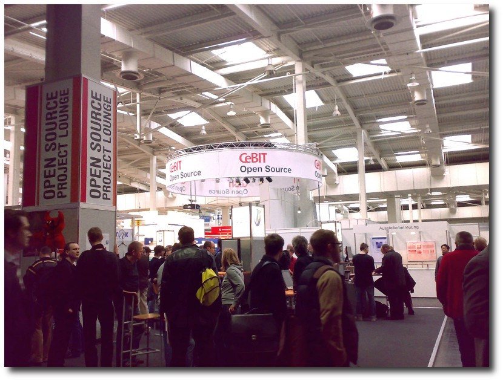Open Source war auf der CeBIT ein großes Thema.
Ebenso aktiv ging es gleich nebenan im Linux-Park zu, welcher dieses Jahr in „Forum Open Source“ umbenannt wurde. Dadurch unterstreicht die Messe den weiter gefassten Fokus, da auch der Begriff Open Source mittlerweile salonfähig geworden ist und nicht nur linuxnahe Software präsentiert wurde. Unter den Ausstellern befanden sich unter anderem OpenOffice.org, welche Version 3 ihrer Officesuite demonstrierte, KDE und GNOME, Blender und Mozilla sowie Drupal, die jeweils ihre Projekte anhand von Live-Demos und Gesprächen vorstellten. Es gab aber auch kommerzielle Anbieter wie SugarCRM, AncudIT oder Linux New Media, die ihre jeweiligen Dienste anboten. Natürlich war auch Ubuntu mit einem eigenen Stand vertreten (Link) und verteilte fleißig Installations-CDs. Sogar die Merchandising-Artikel verkauften sich gut und auch eine Vielzahl an älteren Besuchern hat sich für die Distribution begeistern können, merkte Christopher Grebs vom Ubuntu-Stand an. Die gesteigerte Bekanntheit und Akzeptanz von Linux, Ubuntu und freier Software allgemein ist deutlich zu merken. Dem Forum Open Source wurde sogar ein Open-Coffee (eine eigene Kaffeelounge) an die Seite gestellt, um mit Besuchern bei einer Tasse Kaffee zu diskutieren. Links
- http://www.cebit.de/
- http://www.cebit.de/greenit_d
- http://www.cebit.de/opensource_d
- http://www.cebit.de/webciety_d
- http://verein.ubuntu-de.org/content/cebit-2009
| Autoreninformation |
| Matthias Kietzke beschäftigt sich seit Jahren mit freier Software. Er besuchte am 4. März die CeBit und interessierte sich besonders für das Forum Open Source. |
Rezension: Coding for Fun - IT-Geschichte zum Nachprogrammieren
von Raoul Falk Wolmeringer möchte, dass der Leser allen Ernstes Spaß mit dem Computer hat. Dies ist kein Widerspruch. Mit dem nötigen mathematischen und technischen Hintergrundwissen ausgerüstet, tritt der Leser eine Reise durch die Geschichte der Programmierung an und stößt dabei auf ungewöhnliche, nostalgische, lehrreiche oder auch einfach nur unterhaltsame Programme, die stets zum Nachahmen und Mitmachen einladen.Allgemeines
Zum Lieferumfang des über 500 Seiten starken Softcover-Buches gehört eine umfangreiche Begleit-DVD, die alles Nötige beinhaltet, um die vorgestellten Programme selbst auszuprobieren und weiterzuentwickeln. Auf der DVD befinden sich u. a. Quelltexte, vorkompilierte Programmbeispiele, hilfreiche Werkzeuge für die Erstellung von Diskettenabbildern, FreeDOS und die Desktop-CD von Ubuntu. Letztere entspricht in der ersten Auflage leider noch der Version 7.10, sodass man mittlerweile lieber eine aktuellere Version installieren sollte. Es sei noch angemerkt, dass einige mitgelieferte Programme als EXE vorliegen, und dass eine fehlerfrei Ausführung mit Wine nicht immer garantiert ist. Neben den vielen anschaulichen Beispielen zu nahezu jedem Programmierparadigma, vermittelt der Autor zunächst unabdingbares theoretisches Wissen. Hier wird auch die eigentliche Zielgruppe bereits deutlich: Ohne Interesse an Mathematik und Technik wird man an diesem Werk wohl keine Freude haben, obwohl der Titel und die jungen Menschen auf dem Cover vielleicht den Eindruck eines jugendfreundlichen Buches vermitteln. So wird der Leser bereits im ersten Abschnitt mit vermeintlichen Schreckgespenstern aus der theoretischen Informatik wie der Turing-Maschine, der Turing-Vollständigkeit oder dem Gödelschen Unvollständigkeitssatz konfrontiert. Die Erläuterungen sind - gemessen an der Kürze der Ausführungen - aber schlüssig, logisch und meistens auch für Hobbyisten nachvollziehbar, wobei im gesamten Buch auf mathematischen Formalismus wohlwollend verzichtet wird. Der Gebrauch von einschlägigen Programmen zur Virtualisierung wird dringend empfohlen und ist im Anhang des Buches freundlicherweise genau beschrieben, sodass hier keine Vorkenntnisse nötig sind. Die Gratwanderung zwischen Einsteigerfreundlichkeit und Anspruch versucht der Autor durch Kenntlichmachung von einzelnen Abschnitten zu meistern. Es werden Abschnitte für Kenner mit einem Pacman und Abschnitte für Könner, etwas humoristisch, mit einem Geist gekennzeichnet. So kann man getrost mal einen Abschnitt überspringen, dem man sich nicht gewappnet fühlt, um an späterer Stelle noch einmal zurückzukommen. Der Auflockerung dienen zwischendurch immer wieder Abschnitte über die geschichtliche Entwicklung.BASIC und Assembler
Die Zeitreise beginnt mit der Sprache BASIC. Hierzu bedient man sich zunächst eines virtuellen DOS, welches man zuvor z. B. mit VirtualBox angelegt hat. Dabei erlernt man spielerisch das GOTO-Prinzip und bekommt als Belohnung einen großen Happen Nostalgie und ein Erfolgserlebnis. Als Nächstes kann man mit dem Emulator x64 die alten Zeiten wieder richtig aufleben lassen und mit dem legendären Commodore 64 samt eingebautem BASIC-Interpreter Retroluft schnuppern. Vorgestellt werden hierbei eine Laufschrift und eine grafische Spielerei mit geometrischen Figuren, anhand derer man den Umgang mit zählenden Schleifen lernt. Wer sich schon immer einmal mit seiner CPU unterhalten wollte, erhält eine kleine Einführung in die Assembler-Programmierung. Auch hier nutzt man wieder eine virtuelle DOS-Maschine und einen mitgelieferten grafischen Debugger namens AFD, der es ermöglicht, Schritt für Schritt einzelne Befehle auszuführen. Dabei hält die mehrfach geteilte Ansicht den Anwender stets auf dem Laufenden was den Stack, die nächsten Befehle und die Register angeht. Wer den letzten Satz nicht vollständig verstanden hat, ist genau auf dem richtigen Wissensstand für dieses Kapitel. Die wichtigsten Befehle und Register werden erklärt, wobei die Erläuterung des Stacks, dessen Verständnis unabdingbar ist, leider kaum angerissen wird. Es sind also Vorkenntnisse oder die Bereitschaft, sich über das Buch hinaus mit diesem Thema zu beschäftigen, nötig. 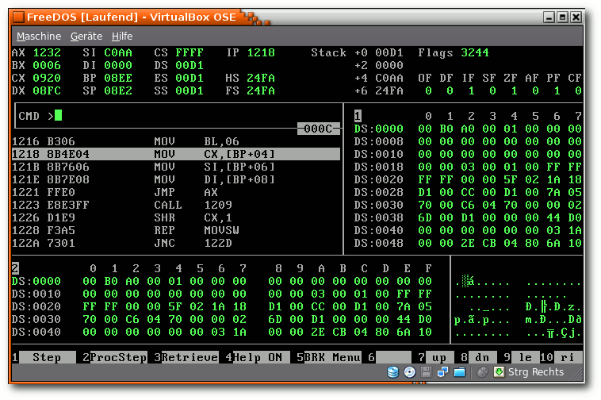Der Debugger AFD in Aktion.
Spiele und bunte Landschaften
Selbstverständlich kommen die von so vielen Menschen geliebten Computerspiele nicht zu kurz. Der erste Halt ist der Klassiker Pong. Während die Urfassung noch in Hardware realisiert war, wird der komplette Quellcode als Java-Projekt für die Entwicklungsumgebung Eclipse zur Verfügung gestellt. Etwas verruchter wird es beim Spiel „Hack The Game V. 1.21“. In diesem kann man seine kriminelle Energie entladen und Daten von fremden Hosts stehlen, löschen und weitere Schandtaten begehen. Auf alle Fälle ein sehr unterhaltsames Spiel, das trotz der eindeutigen Ziele des Protagonisten pädagogisch wertvoll ist, da man beinahe zwangsläufig langjährige virtuelle Haftstrafen antreten muss. Für Grafikinteressierte ist dem Buch auch eine Anleitung für das Programm Blender sowie ein Programmbeispiel in Java3D beigegeben.Das Apfelmännchen und das Chaos
Besondere Erwähnung gebührt dem Abschnitt über Fraktale. Neben der durchaus lesenswerten Erklärung dieser Muster mit Selbstähnlichkeiten und Skaleninvarianzen, wird auf das Programm Xaos verwiesen, welches man als Mathematik- und/oder Kunstfreund nicht auslassen sollte. Xaos kann über das Paket xaos installiert werden, alternativ kann man auch die neueste Version kostenfrei direkt von der Projektseite (Link) herunterladen. Es bietet sehr aufschlussreiche Präsentationen und eine verblüffende Zoom-Funktion für die angezeigten Fraktale. Dies schafft einen nahtlosen Übergang zu rekursiven Programmen, die beispielhaft anhand eines kleinen Java-Programms vorgestellt werden, welches ein einfaches Fraktal mit erstaunlich wenig Code erzeugt. Könner werden auch eingeladen, ihre eigenen Visualisierungen mit Java zu realisieren. Was zunächst wie eine Spielerei wirkt, ist in der Realität die Grundlage dafür, naturgegebene Strukturen in Programmen nachzubilden und aus der heutigen Informatik nicht mehr wegzudenken.Betriebssysteme - Vergessene Legenden
Beim Thema Betriebssysteme wird etwas weiter ausgeholt. Mit einem flüssig zu lesenden Abriss über die Geschichte erhält man Einblicke in längst vergessene Kapitel, insbesondere der GUI-Historie. Oberflächen wie Smalltalk 80, GEM (zum Ausprobieren auf der DVD mitgeliefert) oder das Echtzeitsystem QNX werden vorgestellt. Über den C64 bis zu modernen Linux-Distributionen (als Beispiel wird Ubuntu vorgestellt) erhält man einen Überblick über die Entwicklung von Betriebssystemen und der Programmiersprachen, die mit den Systemen einhergingen. Besonders anschaulich ist ein in Java implementierter Netzgraph, der die Verwandtschaftsbeziehungen zwischen den Prorgammiersprachen verdeutlicht.KI - Ist Skynet möglich?
Der Traum vom denkenden Rechner ist noch älter als die Informatik. Dieses Kapitel bringt dem Leser die unterschiedlichen Ansätze näher, mit denen man versucht, schwache oder gar starke künstliche Intelligenzen zu erzeugen. Die Simulation von neuronalen Netzen wird unter anderem anhand des Programms MemBrain erklärt. Mit diesem kann man beispielsweise einem System aus nur sechs Neuronen Wissen antrainieren, welches auf Abfrage auch korrekt wiedergegeben wird. Mit einer solchen assoziativen Speicherung erhält man sogar Antworten auf Fragen, die dem System nie explizit beigebracht wurden. Die Antwort lässt sich nicht vorhersehen. Damit funktioniert MemBrain analog zum menschlichen Verstand: Wissen wir etwas nicht, so versuchen wir Schlüsse zu ziehen. Hier ist also sehr viel Spielraum für weiterführende Experimente mit diesem Programm. Eine andere Herangehensweise bieten die vorgestellten Programmiersprachen Smalltalk, Lisp und Prolog. Letztere gibt beispielsweise die Möglichkeit, eine Wissensbasis mit allgemein gehaltenen Aussagen zu schreiben, anhand derer dann konkrete Fragen an das Programm gestellt werden können. Hierbei ergeben sich allerdings keine unvorhersehbaren Antworten, da z. B. durch Rekursion oder Backtracking so lange Aussagen abgeleitet werden, bis eine verlässliche Antwort gefunden ist oder bis die Unmöglichkeit einer verlässlichen Antwort bewiesen ist. Anschaulich dargestellt: Wenn ich nur weiß, dass die Straße immer glatt ist, wenn sie kälter als 0 °C ist, kann ich stets bejahen, dass die Straße glatt ist, wenn es friert. Andererseits kann ich nicht mit Sicherheit sagen ob es friert, nur weil die Straße glatt ist.Programmieren lernen
Der letzte Abschnitt ist eine Einführung in die BASIC-Programmierung mit Hilfe der unfreien Entwicklungsumgebung VB Express von Microsoft. Anhand eines Ameisenvolkes kann man spielerisch mit der Umgebung und der Sprache vertraut werden. Praktischerweise liegt das umfassende Buch „Visual Basic 2005“ als HTML-Version bei, sodass man sich tiefgründig mit der Sprache auseinandersetzen kann.Fazit
Wolmeringer überzeugt mit einer guten Auswahl seiner Beispiele und mit einem sehr flüssigen Schreibstil. Man lässt sich gern mit auf die Reise nehmen und möchte alles ausprobieren und verstehen. Dies wird aber leider nicht jedem gelingen. Die Materie ist durchaus anspruchsvoll und nicht immer einsteigerfreundlich. Für den ambitionierten Einsteiger, der bereits wenigstens eine moderne Programmiersprache in Grundzügen verstanden hat, bieten sich Herausforderungen, die ihn stets fordern. Experten der Programmierung finden zumindest spannende Beispiele in ungewohnten Gefilden, die ihnen vielleicht bis dato verborgen blieben. Anfänger können angesichts der Fülle an thematisch völlig unterschiedlichen Kapiteln leicht den Überblick verlieren. Auch die Tatsache, dass die Kapitel nie erschöpfende Ausführungen enthalten, tragen hierzu bei. Man darf aber nicht vergessen, dass das Buch nicht den Anspruch hat, ein Lehrbuch zu sein. Dazu treffend im Vorwort: „Es wäre schön, wenn sich Leser finden würden, die das Buch als Sammlung von Anregungen verstehen.“ Erfahrenen Linux-Benutzern könnte noch negativ auffallen, dass von den 573 Seiten stolze 182 auf den Anhang fallen, der Anleitungen zur Installation von VirtualBox, Xen, FreeDOS, Ubuntu, Java und weiterer Software enthält. Für weitere Informationen und Leseproben bietet sich ein Besuch der Seite des Verlages (Link) an.| Buchinformationen | |
| Titel | Coding for Fun - IT-Geschichte zum Nachprogrammieren |
| Autor | Gottfried Wolmeringer |
| Verlag | Galileo Computing, 2008 |
| Umfang | 573 Seiten, Broschiert mit DVD |
| ISBN | 978-3-8362-1116-1 |
| Preis | 24,90 Euro |
- http://sourceforge.net/projects/xaos
- http://www.galileocomputing.de/katalog/buecher/titel/gp/titelID-1628
| Autoreninformation |
| Raoul Falk ist Korrektor für freiesMagazin, interessiert sich für Programmiertechniken und schaut Entwicklungsumgebungen gerne unter die Haube. |
freiesMagazin-Programmierwettbewerb
Die Auswertung der freiesMagazin-Umfrage letzten Monat hat gezeigt, dass sich sehr viele Leser Programmierthemen wünschen. Man kann (mit etwas gutem Willen) aus diesem Wunsch auch ablesen, dass es da draußen sehr viele (Hobby-)Programmierer gibt. Und gegebenenfalls gibt es sogar welche, die nach etwas Programmierarbeit lechzen. All diese wollen wir diesen Monat ansprechen - und damit auch gleich alle Leser befriedigen. Als Ansporn gibt es auch eine Kleinigkeit zu gewinnen.Die grobe Idee
Die Programmieraufgabe ist prinzipiell sehr einfach gestrickt. Es geht darum, für ein sehr simples Zwei-Personen-Spiel die künstliche Intelligenz (KI) (Link), d. h. den computergesteuerten Spieler, zu erstellen. Diese soll nach Übergabe einiger Daten die (in den Augen des Programmierers) beste Zugmöglichkeit herausfinden. Auf diese Art spielen zwei künstliche Intelligenzen gegeneinander. Der Programmierer mit der besten, d. h. dominierensten KI (siehe unten für genaue Kriterien), gewinnt den Wettbewerb.Das Spiel
Zuerst soll das Spielprinzip erklärt werden. Die Idee wurde dabei nicht von uns entwickelt, sondern stammt aus dem Spiel „Bejeweled“, welches mit der Neuauflage „Puzzle-Quest“ (Link) wieder auflebte. Auf einem 10x10-Spielfeld befinden sich verschiedenfarbige Steine und Bomben. Durch das Tauschen zweier benachbarter Steine muss man mindestens drei gleichartige in eine Reihe bringen, sodass diese verschwinden und Punkte bringen. Sind diese Punktekonten weit genug aufgefüllt, erleidet der Gegner Schaden. Durch die Aneinandereihung von Bomben kann man auch direkten Schaden verursachen. Wurden zwei Steine getauscht, werden alle gleichartigen Steine mit einer zusammenhängenden Länge (waagerecht oder senkrecht) von mindestens drei Steinen vom Spielfeld entfernt und einem Spieler gut geschrieben oder verursachen Schaden. In den Spalten, in denen es nun freie Stellen gibt, rutschen alle Steine nach unten. Danach fallen von oben neue Steine herab und füllen das Spielfeld wieder auf.Die Spielsteine
Wie erwähnt, gibt es verschiedenfarbige Spielsteine: grün, gelb, rot, blau und lila. Diese haben die folgende Bedeutung:| Die Spielsteine | |
| Farbe | Bedeutung |
| grün | sammelt man mindestens 15 Steine, erleidet der Gegner 3 Schaden |
| gelb | sammelt man mindestens 15 Steine, erleidet der Gegner 6 Schaden |
| rot | sammelt man mindestens 15 Steine, erleidet der Gegner 10 Schaden |
| lila | sammelt man mindestens 15 Steine, ist man ein zweites Mal an der Reihe |
| blau | lädt den Schild eines Spielers wieder auf |
| Die Wahrscheinlichkeiten | |
| Stein | Wahrscheinlichkeit |
| jeder farbige Stein | 0.18 |
| je Bombenwert | 0.02 |
Die Spieler
Jeder der beiden Spieler hat eine bestimmte Anzahl von Lebenspunkten (Standard: 30) und einen Schild (Standard: 15). Erleidet der Spieler durch gegnerische Angriffe Schaden, wird zuerst der Schild reduziert. Wenn dieser Wert auf 0 gesunken ist, werden die Lebenspunkte abgezogen. Erreichen diese 0, hat der Spieler verloren. Durch das Aneinanderreihen blauer Steine kann man den Schild aber bis zur Maximalzahl 15 wieder aufladen. Dazu hat jeder Spieler ein Konto für rote, gelbe und grüne Steine. Ab einem bestimmten Wert (Standard: 15) werden diese automatisch in gegnerischen Schaden umgesetzt und verschwinden wieder vom Konto. In der Regel sind die zwei Spieler immer abwechselnd an der Reihe. Sammelt ein Spieler aber eine bestimmte Anzahl lilafarbener Steine (Standard: 15), ist er erneut am Zug.Beste Taktik
Zu entscheiden, was die beste Taktik ist, ist Ihre Aufgabe. Die Referenzimplementierung (siehe unten) stellt eine sehr simple KI zur Verfügung. Diese tauscht einfach so lange Steine, bis gleichartige nebeneinander liegen und sieht das als günstigen bzw. gültigen Zug an. Dieses Vorgehen ist natürlich sehr dumm. Ein erster Fortschritt wäre es, wenn aus allen gültigen Tauschmöglichkeiten die ausgewählt wird, die dem Spieler den meisten Gewinn beziehungsweise dem Gegenspieler den meisten Schaden bringt. Oder anders: Vorrangig Bomben zu sammeln, ist meist sehr sinnvoll. ;) Daneben gibt es noch andere taktische Möglichkeiten, die Sie aber selbst ausknobeln dürfen.Beispiel
Um das Spielprinzip besser zu verdeutlichen, soll ein Beispielzug durchgeführt werden. Die Ausgangsbasis ist dabei das folgende Spielfeld: 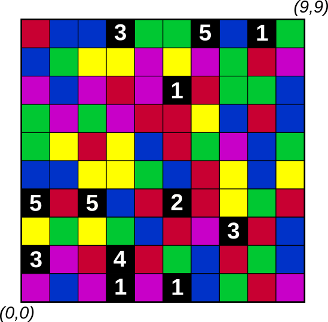 Die Zählung der Spielfeldindizes beginnt typisch für C++ (Referenzimplementierung) bei 0, sodass die x- und y-Werte von 0 bis 9 laufen. Der Spieler, der an der Reihe ist, hat verschiedene Möglichkeiten, einen gültigen Zug durchzuführen. Er kann z. B. Feld (0,8) mit (0,9) tauschen, was drei blaue Steine horizontal zusammenfügt, oder (6,7) mit (5,7), was drei rote Steine vertikal aneinanderreiht. Die Referenz-KI tauscht aber die Felder (1,0) mit (1,1), um drei lilafarbene Steine zusammenzufügen. Die drei lilafarbenen Steine werden seinem Konto gut geschrieben und verschwinden. Alle darüberliegenden Steine rutschen ein Feld nach unten, was oben eine Lücke entstehen lässt, welche durch neue Steine aufgefüllt wird: 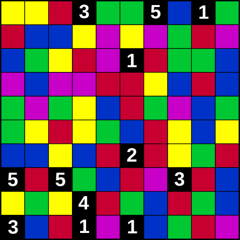 Im nächsten Zug böte es sich für den zweiten Spieler an, Feld (2,2) mit (3,2) zu tauschen, damit der erste Spieler 10 Punkte (5 + 4 + 1) Schaden erleidet.Referenzimplementierung
Damit niemand denkt, der Sieger würde später im Geheimen von uns gekürt, wird die Spielmechanik unter der GPLv3 (Link) auf unserer Webseite veröffentlicht (per FTP (Link) oder per HTTP (Link)). Die Implementierung geschah dabei mittels C++ und befindet sich im Verzeichnis fm-game. Daneben wurde auch, wie oben bereits erwähnt, eine einfache KI programmiert, die sich im Ordner fm-ai befindet („ai“ steht für den englischen Ausdruck „artificial intelligence“). Möchte man das Spiel und die KI kompilieren, benötigt man einen C++-Compiler, den man am einfachsten über das Paket build-essential installiert. Danach kann man aus dem entpackten Verzeichnis wettbewerb einfach ein makeaufrufen, was alle C++-Dateien in Binärcode umwandelt.
Wettbewerb starten
Um einen neuen Wettbewerb zu starten, müssen zwei KIs fm-ai1.bin und fm-ai2.bin im Ordner (gegebenenfalls auch nur als Link) existieren. Dazu benötigt man noch ein vorberechnetes Spielfeld (hier: beispielfeld.dat). Hinweis: Das Beispiel umfasst dabei ein Spielfeld der Größe 10x1000, relevant, also spielbar, sind die letzten 10 Zeilen. Die Größe von 1000 Zeilen sorgt aber dafür, dass das Spielfeld in jedem Spieldurchgang nicht mit zufälligen Steinen von oben aufgefüllt wird, sondern vorberechnete Steine benutzt werden. So hat jede KI die gleichen Chancen. Die zwei KIs lässt man per ./fm-game.bin beispielfeld.datgegeneinander antreten. In einem Programmdurchlauf gibt es zwei Partien mit dem gleichen Startspielfeld. Zuerst hat KI 1 den ersten Zug. Nachdem das Ergebnis der ersten Partie auf dem Bildschirm ausgeben wird, muss der Benutzer eine Taste drücken. Dann startet die zweite Partie, wobei KI 2 den ersten Zug hat. Hinweis: Startet man das Spiel mit der gleichen KI für KI 1 und KI 2, sollte sich bei einem deterministischem Algorithmus, d. h. keine Zufallsentscheidungen, ein symmetrisches Ergebnis ergeben. Sprich, wenn Spieler 1 im ersten Spiel gewinnt, muss Spieler 2 im zweiten Spiel gewinnen und umgekehrt. Wer sich selbst ein Spielfeld generieren möchte, kann dies über ./fm-game.bin DATEINAME create
erzeugen und dann das Spiel per ./fm-game.bin DATEINAME
mit diesem Feld starten.
Teilnahmebedingungen
Sprache
Welche Programmier- oder Skriptsprache für die KI benutzt wird, ist egal. Das Skript bzw. das Programm sollte sich aber relativ einfach auf einem „normalen“ Linux-System (genauer Ubuntu 8.10) ausführen bzw. kompilieren lassen. Es wird zwingend vorausgesetzt, dass der Code (gegebenenfalls mit einer kleinen Anleitung zum Übersetzen), und nicht nur eine Binärdatei eingereicht wird. Der Quellcode muss dabei einer freien Lizenz (Link) unterliegen. Hinweis: Wer möchte, kann auch gerne den Code der Referenz-KI benutzen und erweitern. Damit fällt der Einstieg vielleicht etwas leichter. Welche Sprache (also Deutsch oder Englisch) im Programm selbst für Kommentare und Bezeichnungen benutzt wird, ist dem Programmierer überlassen. Kommentare sollte es aber geben. ;)Schnittstelle
Um eine einfache Schnittstelle zu gewährleisten, werden die Daten zwischen Spielmechanik und KI über Dateien ausgetauscht. Die Spielmechanik schreibt dabei die folgenden Dateien:- player.dat enthält die Daten des Spielers. In jeder Zeile steht je ein Wert mit der folgenden Bedeutung:
- Lebenspunkte
- Schild
- rote Punkte
- gelbe Punkte
- grüne Punkte
- lilafarbene Punkte
- opponent.dat enthält die Daten des Gegners, auf die man gerne zugreifen kann. Der Dateinhalt ist dabei identisch zu oben.
- gamefield.dat enthält das 10x10 Spielfeld, wobei nur die ersten hundert Zeichen (der Art „R“, „Y“, „G“, „B“, „L“, „1“ - „5“) relevant sind. (Natürlich sollten in der Datei exakt 100 Zeichen drinstehen. ;)) Der erste Wert (linke obere Ecke) hat dabei den Index (0,9), der zweite (1,9) etc. bis hin zum letzten Wert (untere rechte Ecke) mit dem Index (9,0).
Im Normalfall sollte das KI-Programm 0 als Wert zurückgeben, im Fehlerfall irgendetwas ungleich 0. Zusätzlich muss das Programm eine Datei result.dat mit den Daten der zu tauschenden Felder enthalten: FELD_1_X FELD_1_Y FELD_2_X FELD_2_Y
So würde zum Beispiel der Inhalt 1 0 1 1
das Feld (1,0) mit dem Feld (1,1) tauschen. Felder müssen dabei immer benachbart sein und auch der Index 9 sollte nicht überschritten werden. Sollte also eine Sprache benutzt werden, die bei 1 anfängt zu zählen, sollte beim Schreiben der Datei daran gedacht werden.
Laufzeit
Die Laufzeit der KI sollte eine Minute pro Zug nicht überschreiten. Da das Spiel aber sehr einfach gehalten ist und durch die „Zufallskomponente“ nicht unendlich weit in die Zukunft berechnet werden kann, sollte die Laufzeit eigentlich gering ausfallen.Sonstiges
Bei Fragen zur Implementierung (also nicht zur Umsetzung, sondern nur zu den Randbedingungen), steht die freiesMagazin-Redaktion unterSiegerehrung
Der Stichtag für Wettbewerbsende ist der 10. Mai 2009. Sollte die Resonanz bis dahin extrem positiv ausfallen und wir mit Programmen überschüttet werden, gibt es vielleicht auch eine Verlängerung bis zum 24. Mai 2009. Der Sieger wird dann in der Juniausgabe von freiesMagazin mitgeteilt. Wie oben erwähnt gibt es als Ansporn auch eine Kleinigkeit zu gewinnen: einen Gutschein im Wert von 25 Euro für den Online-Handel Bookzilla.de (Link). Es wurde sich für diesen Händler entschieden, da durch den Verkauf der Bücher 5 % des Erlöses an die Free Software Foundation Europe (Link) gespendet werden. Diese Unterstützung Freier Software wollen wir natürlich auch unterstützen. Wir wünschen allen Teilnehmern viel Erfolg und freuen uns über zahlreiche Programme, die dann zum Duell gegeneinander antreten. Links- http://de.wikipedia.org/wiki/Künstliche_Intelligenz
- http://www.puzzle-quest.com/
- http://www.gnu.org/licenses/gpl.html
- ftp://ftp.freiesmagazin.de/2009/freiesMagazin-2009-04-wettbewerb.tar.gz
- http://freiesmagazin.de/ftp/2009/freiesMagazin-2009-04-wettbewerb.tar.gz
- http://www.opensource.org/licenses/alphabetical
- http://www.bookzilla.de/
- http://www.fsfeurope.org/
Leserbriefe
Für Leserbriefe steht unsere E-MailadresseLeserbriefe und Anmerkungen
LATEX-Code gemeinsam bearbeiten
Ich lese, Ihr sucht Mitarbeiter, die LATEX-Code bearbeiten, der in einem SVN-Repository liegt. Vielleicht interessiert Euch Latexki (Link). Das ist ein Wiki für LATEX-Dokumente und wird seit einigen Jahren benutzt, um gemeinsam Vorlesungsmitschriebe zu koordinieren (Link). Die Dateien liegen in einem SVN-Repository und können auch per SVN bearbeitet werden (für reguläre Mitarbeiter). Für Leute, die SVN scheuen und kein LATEX selbst installieren wollen, gibt es ein Webinterface.Das Wiki macht eigentlich nichts anderes als die Dokumente auf dem Server mit pdflatex zu bauen - [eigene] Makros sollten daher kein Problem sein. Und man sieht das Dokument nach jeder Änderung per Web-Interface auch wirklich neu generiert als PDF. Das Bearbeiten passiert dabei allerdings im LATEX-Code. Joachim Breitner freiesMagazin: Vielen Dank für den Vorschlag. Das Wiki klingt definitiv interessant. Vor allem für Mitarbeiter, die mit SVN gar nicht umgehen können, ist dies definitiv eine Alternative, die wir im Hinterkopf behalten werden. Da wir die Idee der kollaborativen Arbeit für sehr sinnvoll halten, veröffentlichen wir Ihren Tipp auch im Magazin.
Qualität der Grafiken
Mir ist ins Auge gefallen, dass freiesMagazin als einziges [Magazin] in LATEX erstellt wird. [...] Mir ist aufgefallen, dass die runden Bögen um die orangen Autoreninformationskästchen als png-Bild (also Rastergrafik) eingebunden sind. [...] Ich verstehe nicht, wie es dazu kommt, dass Sie möglichst nur ein Grafikformat verwenden wollen? Ich hatte nie ein Problem mit: PDF, wo mit wenig Aufwand möglich, sonst halt PNG. Dominik Kreutzmann freiesMagazin: Vielen Dank für Ihre Anmerkung. In der Tat war es für uns bisher einfacher, nur ein Grafikformat zu verwenden, da wir so keine Unterscheidung zwischen PDF-Magazin und HTML-Ausgabe machen mussten. Da die statischen Inhalte wie Autorenkästchen, Lupe etc. aber sowieso nicht in der HTML-Version zu finden sind, haben wir diese Grafiken wie von Ihnen vorgeschlagen, auf PDF (also Vektorgrafiken) umgestellt.Für alle Leser bedeutet das, dass die statischen Grafiken nun wesentlich deutlicher und schärfer erscheinen und auch beim Zoomen nicht verschwimmen. Zusätzlich haben ausgedruckte Artikel dadurch eine höhere Qualität.
Sollte es in einem PDF-Viewer wider Erwarten Probleme mit den neuen Grafiken geben, schreiben Sie uns bitte an
PDF-Versand per E-Mail
Besteht die Möglichkeit, dass man monatlich die Ausgabe als PDF zugesandt bekommt? Und zu welchem Datum erscheint denn in der Regel die neue Ausgabe? Torsten Metz freiesMagazin: Der Aufwand eines Newsletters ist, vor allem was die Datenschutzrichtlinien in Bezug auf die Speicherung der E-Mailadresse angeht, für eine kleine Redaktion wie unsere einfach zu hoch. Wenn Sie den RSS-Feed aber abonnieren, sind sowohl PDF- als auch HTML-Version dort direkt verlinkt und können durch einen einzigen Klick aufgerufen werden. Eine neue Ausgabe von freiesMagazin erscheint immer am ersten Sonntag in einem Monat.Korrekturen und Fehler
World of Goo - Die Bälle sind los, freiesMagazin 03/2009 (Link)
Ein paar Leser fanden es nicht gut, dass im „World of Goo“-Artikel nirgends steht, dass es sich nicht um ein Open-Source-Spiel handelt, sondern die Quellen verschlossen sind. In der Tat wurde versäumt, dieses Manko explizit zu erwähnen, was hiermit nachgeholt wird. An der Stelle betonen wir aber auch noch einmal, dass in freiesMagazin Themen zu Linux, Open Source und Freier Software zu finden sind. Dies ist kein einschließendes Und! Wir werden auch in Zukunft über proprietäre oder kommerzielle Projekte berichten, wenn diese unter Linux aus der Menge der Freien Software herausragen.LXDE im Test, freiesMagazin 03/2009 (Link)
„Doch wie schafft Xfce es, einen derart schnellen Desktop zu bauen, der ein aktuelles Linux endlich mal so schnell werden lässt wie ein Windows XP?“ Natürlich sollte das LXDE heißen, da sich im Artikel vorher über die Größe von Xfce beschwert wurde.Auswertung der Umfrage, freiesMagazin 03/2009 (Link)
Zwei Korrekturen müssen wir zur Auswertung der freiesMagazin-Umfrage nachreichen. Zum einen haben mehrere Leser angemerkt, dass unser Schluss für die geringe Nutzung des RSS-Feeds von freiesMagazin falsch ist. Da die Ankündigung einer neuen Ausgabe auch auf anderen Portalen wie Pro-Linux oder Ikhaya von ubuntuusers.de veröffentlicht wird, landet die Ankündigung auch in deren RSS-Feeds. Aus dem Grund sehen es viele Leser als unnötig an, auch noch den freiesMagazin-Feed zu abonnieren. Da viele Ankündigungen (Interviews, Artikelwunschliste, Programmierwettbewerb etc.) aber exklusiv im freiesMagazin-Feed zu finden sind, geben wir vielleicht doch einen Anreiz, den Feed zu abonnieren. Der zweite Fehler ist uns selbst aufgefallen. Wir haben für jedes Ergebnis als Anzahl der Teilnehmer die Summe aller Antworten genommen. Dadurch wurden bei den Fragen, bei denen man mehrere Antworten (also auch keine) ankreuzen konnte, die Teilnehmer, die nichts angekreuzt haben, vernachlässigt. Hier sind wir fälschlicherweise davon ausgegangen, dass diese die Frage gar nicht bearbeitet haben. Die Folge davon ist glücklicherweise nicht schlimm. Alle Prozentzahlen liegen so zwar ein klein wenig (wenige Prozentpunkte) zu hoch, die Reihenfolge der Platzierung ändert sich aber nicht. So sind auch unsere Schlussfolgerungen der Ergebnisse nach wie vor korrekt.Songbird installieren, freiesMagazin 03/2009 (Link)
Marian Sigler merkte an, dass die Übergabe der Besitzrechte an den Benutzer root zwingend notwendig sei, wenn man Songbird für alle Benutzer installieren will. Wenn man die Besitzrechte ließe, könnte der Benutzer 1000 in den Dateien rumschreiben und damit anderen Benutzern jeglichen Code unterschieben. Natürlich sind die Anmerkungen korrekt, es kommt aber auch auf das System des Benutzers an. Die Mehrheit der Nutzer hat ein Einzelplatzsystem, in dem es fast egal ist, wie die Rechte sitzen, da eben nur eine Person daran arbeitet. Selbst auf privaten Mehrplatzsystemen würden sich andere Nutzer nicht unbedingt daran stören, dass der Standardnutzer mit der ID 1000 (der meist auch das Root-Passwort besitzt) auf die Dateien zugreifen kann. Im Normalfall sollten die Besitzrechte von Dateien, die in einem globalen Ordner liegen, damit alle Benutzer darauf zugreifen können, immer an root übergeben werden. Links- http://latexki.nomeata.de/
- http://mitschriebwiki.nomeata.de/
- http://www.freiesmagazin.de/freiesMagazin-2009-03
Veranstaltungskalender
| Messen | ||||
| Veranstaltung | Ort | Datum | Eintritt | Link |
| Linuxwochen | Krems | 15.04.09 | frei | http://linuxwochen.at |
| Linuxwochen | Wien | 16.04.-18.04.09 | - | http://linuxwochen.at |
| Linuxwochen | Linz | 23.04.-25.04.09 | - | http://linuxwochen.at |
| Skolelinux Arbeitstreffen | Gütersloh | 24.04.-26.04.09 | frei | http://wiki.skolelinux.de/Roadmap2009 |
| Grazer Linux Tage | Graz | 25.04.09 | frei | http://www.linuxtage.at |
| Schwabacher Linuxtage | Schwabach | 25.04.-26.04.09 | frei | http://lusc.de |
Konventionen
An einigen Stellen benutzen wir Sonderzeichen mit einer bestimmten Bedeutung. Diese sind hier zusammengefasst:| $: | Shell-Prompt |
| #: | Prompt einer Root-Shell - Ubuntu-Nutzer können hier auch einfach in einer normalen Shell ein „sudo“ vor die Befehle setzen. |
| ~: | Abkürzung für das eigene Benutzerverzeichnis /home/BENUTZERNAME |
Vorschau
freiesMagazin erscheint immer am ersten Sonntag eines Monats. Die Mai-Ausgabe wird voraussichtlich am 3. Mai unter anderem mit folgenden Themen veröffentlicht:- Virtualisierung mit Proxmox VE
- Debian GNU/Linux 5.0 „Lenny“ - Der Zustand der Distribution
- Kennwortgedächtnis auslagern mit KeePassX
Zum Index
Impressum ISSN 1867-7991 | ||
| freiesMagazin erscheint als PDF und HTML einmal monatlich. | ||
| Redaktionsschluss für die Mai-Ausgabe: 22. April 2009 | ||
| Kontakt | ||
| Postanschrift | freiesMagazin | |
| c/o Dominik Wagenführ | ||
| Beethovenstr. 9/1 | ||
| 71277 Rutesheim | ||
| Webpräsenz | http://www.freiesmagazin.de | |
| freiesMagazin-Team (Teamaufschlüsselung) | ||
| Raoul Falk | ||
| Stephan Hochhaus | ||
| Ekkehard Hollmann | ||
| Dominik Honnef | ||
| Mathias Menzer | ||
| Thorsten Schmidt | ||
| Karsten Schuldt | ||
| Dominik Wagenführ | ||
| (Verantwortlicher Redakteur) | ||
| Erscheinungsdatum: 5. April 2009 | ||
| Autoren dieser Ausgabe | ||
| Benedikt Ahrens | ||
| Hans-Joachim Baader | ||
| Raoul Falk | ||
| Matthias Kietzke | ||
| Mathias Menzer | ||
| Bernd Noetscher | ||
| Florian Schweikert | ||
| Dominik Wagenführ | ||
| Veranstaltungen | ||
| Ronny Fischer | ||
| Logo-Design | ||
| Arne Weinberg | ||
| Lizenz | GNU FDL | |
Soweit nicht anders angegeben, stehen alle Artikel und Beiträge in freiesMagazin unter der GNU-Lizenz für freie Dokumentation (FDL). Das Copyright liegt beim jeweiligen Autor. freiesMagazin unterliegt als Gesamtwerk ebenso der GNU-Lizenz für freie Dokumentation (FDL) mit Ausnahme von Beiträgen, die unter einer anderen Lizenz hierin veröffentlicht werden. Das Copyright liegt bei Eva Drud. Es wird die Erlaubnis gewährt, das Werk/die Werke (ohne unveränderliche Abschnitte, ohne vordere und ohne hintere Umschlagtexte) unter den Bestimmungen der GNU Free Documentation License, Version 1.2 oder jeder späteren Version, veröffentlicht von der Free Software Foundation, zu kopieren, zu verteilen und/oder zu modifizieren. Die xkcd-Comics stehen separat unter der Creative Commons-Lizenz CC-BY-NC 2.5. Das Copyright liegt bei Randall Munroe.
Zum Index
File translated from TEX by TTH, version 3.85.
On 5 Apr 2009, 00:13.